Multisystem / Multisystem / medium · options=6 · images=1
ocr-updated
A 22-year-old man is brought to the emergency department 15 minutes after sustaining a gunshot wound to the abdomen. His pulse is 110/min, respirations are 20/min, and blood pressure is 100/60 mm Hg. Abdominal examination shows an entrance wound in the left upper quadrant and no exit wound. A CT scan of the abdomen is shown. The injured organ is removed. The bullet is most likely lodged in which of the following organs?
A Adrenal gland
B Kidney
C Left ventricle
D Lung
E Spleen
F Stomach
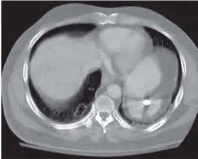
Current asset 1: /api/images_crop/form30_page-174_ocr.webp · 5180 bytesOCR source 1: https://pplines-online.bj.bcebos.com/deploy/official/paddleocr/pp-ocr-vl-16-online//c9027c84-1297-4475-ae27-623913783444/markdown_0/imgs/img_in_image_box_1229_70_1565_339.jpg?authorization=bce-auth-v1%2FALTAKDN8mY5KlNI7zaRpLmOqrw%2F2026-06-18T05%3A40%3A02Z%2F-1%2F%2F4d1614d51a9c024a313454688a5d44ae1d0d94f03badf1df0d9a6ae21e9e6104
Correct: 5
Q2 · Block 1 Item 2 · form31_page-43
Multisystem / Multisystem / medium · options=5 · images=1
ocr-exactlegacy-imagesuspecttiny current image (4600 bytes)
A 6-year-old boy is admitted to the hospital because of an 8-hour history of fever, headache, and nausea. Administration of intravenous (IV) fluids and empiric antibiotics is started pending culture results. A lumbar puncture is done, and a photomicrograph of a Gram stain of cerebrospinal fluid is shown. During the next 24 hours, he develops bleeding from his gums and from all IV puncture sites. He is intubated for respiratory failure, and norepinephrine is administered for blood pressure support. The most likely cause of this patient's new symptoms is which of the following infection-related complications?
A Adrenal hemorrhage
B Cerebral edema
C Congestive heart failure
D Pulmonary embolism
E Toxic epidermal necrolysis
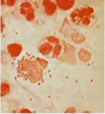
Current asset 1: /api/images_crop/form31_page-43_ocr.webp · 4600 bytesOCR source 1: https://pplines-online.bj.bcebos.com/deploy/official/paddleocr/pp-ocr-vl-16-online//8c812034-2dad-4dcd-bd8b-0086236781b3/markdown_4/imgs/img_in_image_box_542_0_759_236.jpg?authorization=bce-auth-v1%2FALTAKDN8mY5KlNI7zaRpLmOqrw%2F2026-06-18T05%3A40%3A06Z%2F-1%2F%2Fa0c77a9bc03c247fa72481ed7ab9a972c44189f440644dddab97cc267d493113
Correct: 1
Q3 · Block 1 Item 3 · nbme28_q0156
Multisystem / Multisystem / medium · options=5 · images=2
ocr-exactlegacy-image
A 28-year-old woman comes to the physician because of a 1-week history of fatigue, muscle pain, and generalized weakness. She is unable to climb stairs because of the symptoms. She also has a 1-month history of a rash on her face, elbows, and knuckles. Her temperature is $ 38.3^{\circ} $C ( $ 100.9^{\circ} $F), pulse is 100/min, respirations are 20/min, and blood pressure is 115/65 mm Hg. Physical examination shows the findings in the photographs. There is also proximal muscle weakness of the lower extremities bilaterally. Which of the following is the most likely diagnosis? A) Dermatomyositis B) Guillain-Barré syndrome C) Nephrotic syndrome D) Psoriasis E) Systemic lupus erythematosus
A A) Dermatomyositis
B B) Guillain-Barré syndrome
C C) Nephrotic syndrome
D D) Psoriasis
E E) Systemic lupus erythematosus
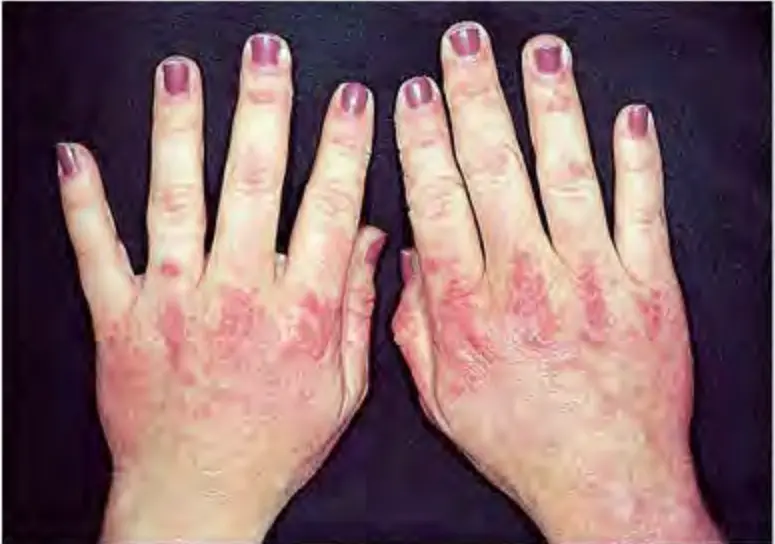
Current asset 1: /api/images_crop/nbme28_q0156_ocr01.webp · 21362 bytesOCR source 1: https://pplines-online.bj.bcebos.com/deploy/official/paddleocr/pp-ocr-vl-16-online//1a282d99-d57e-4b01-93e9-82497ca0c388/markdown_2/imgs/img_in_image_box_1170_171_1945_715.jpg?authorization=bce-auth-v1%2FALTAKDN8mY5KlNI7zaRpLmOqrw%2F2026-06-18T05%3A39%3A52Z%2F-1%2F%2F96f6f3c5eb9eda17f97f21066dfdfb526cb47ef132fb64f002010def8a1eab1d
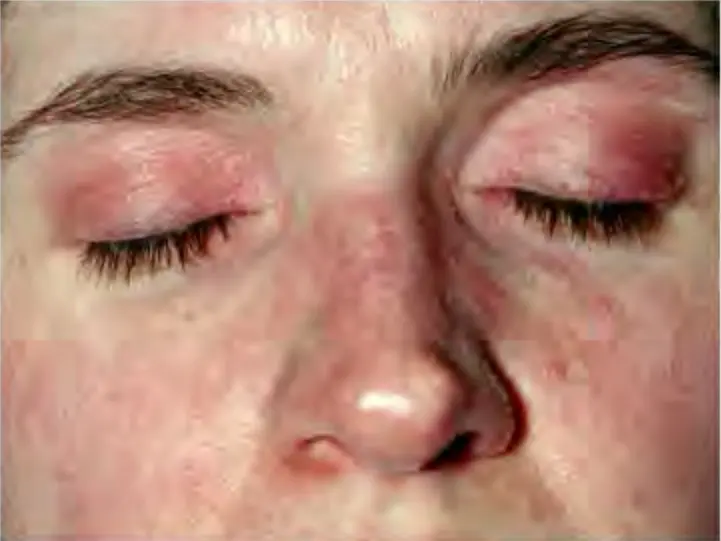
Current asset 2: /api/images_crop/nbme28_q0156_ocr02.webp · 15118 bytesOCR source 2: https://pplines-online.bj.bcebos.com/deploy/official/paddleocr/pp-ocr-vl-16-online//1a282d99-d57e-4b01-93e9-82497ca0c388/markdown_2/imgs/img_in_image_box_1972_172_2693_713.jpg?authorization=bce-auth-v1%2FALTAKDN8mY5KlNI7zaRpLmOqrw%2F2026-06-18T05%3A39%3A52Z%2F-1%2F%2F78269330f633ac14c95c155fc1f44f76f030e914ccffdc7398a2ac5ef61bedba
Correct: 1
Q4 · Block 1 Item 4 · nbme29_q0004
General Principles / General Principles / hard · options=5 · images=0
text-only
Cholestyramine prevents the reabsorption of bile acids from the lumen of the intestine. This decreases serum cholesterol concentrations by which of the following mechanisms?
A A) Activating lecithin-cholesterol acyltransferase (LCAT)
B B) Decreasing VLDL production
C C) Inhibiting hepatic cholesterol synthesis
D D) Stimulating HDL production
E E) Upregulating hepatic LDL receptors
Correct: 5
Q5 · Block 1 Item 5 · form30_page-107
GI / GI / medium · options=4 · images=0
text-only
Alterations of the p53 tumor suppressor gene are most likely seen in patients who have which of the following neoplasms?
A Burkitt lymphoma
B Colonic adenocarcinoma
C Malignant melanoma
D Small cell undifferentiated carcinoma
Correct: 2
Q6 · Block 1 Item 6 · form30_page-109
Behavioral/Nervous & Special Senses / Behavioral/Nervous & Special Senses / medium · options=5 · images=0
text-only
A 1-year-old boy receives a left cochlear implant that consists of an array of electrodes. Six months ago, he was diagnosed with severe bilateral hearing deficit. Which of the following elements of the auditory system must remain intact for this patient to perceive auditory stimulation via activation of the electrodes in the implant?
A Auditory hair cells
B Auditory nerve
C Ossicles
D Round window
E Tympanic membrane
Correct: 2
Q7 · Block 1 Item 7 · form30_page-142
Cardiovascular / Cardiovascular / medium · options=5 · images=0
text-only
A 64-year-old man comes to the physician because of a 6-month history of progressive shortness of breath with exertion. He was diagnosed with a hematological malignancy 4 years ago. His pulse is 85/min and blood pressure is 115/60 mm Hg. Physical examination and chest x-ray show no abnormalities. Echocardiography shows a greater than normal echodense ventricular wall with normal thickness. Right-sided cardiac catheterization shows resistance to diastolic filling. A right ventricular endomyocardial biopsy specimen shows interstitial deposits of pink proteinaceous material and degeneration of myocytes. Which of the following is the most likely precursor of the proteinaceous material found in this patient's heart?
A Atrial natriuretic factor
B Lambda light chains
C β₂-Microglobulin
D Serum amyloid A protein
E Transthyretin
Correct: 2
Q8 · Block 1 Item 8 · form31_page-149
Behavioral/Nervous & Special Senses / Behavioral/Nervous & Special Senses / medium · options=5 · images=0
text-only
A 33-year-old man with HIV infection comes to the physician because of a 3-day history of headaches, intolerance to light, and severe neck stiffness. His temperature is 39.5°C (103.1°F). Physical examination shows photophobia and nuchal rigidity. Analysis of cerebrospinal fluid obtained on lumbar puncture shows cryptococci. Initial therapy with combination antifungal medication, including fluconazole, successfully resolves the symptoms. Fluconazole most likely impaired or inhibited which of the following fungal targets in this patient?
A Cell-wall 1,3-β-glucan synthase
B De novo pyrimidine synthesis
C Ergosterol synthesis
D Microtubule depolymerization
E RNA polymerase
Correct: 3
Q9 · Block 1 Item 9 · form31_page-154
GI / GI / medium · options=5 · images=0
text-only
A 47-year-old woman comes to the physician because of a 1-week history of yellow-tinged eyes and itchy skin. Physical examination shows scleral icterus and multiple excoriations over the trunk. Serum studies show:
Total bilirubin 8 mg/dL
Alkaline phosphatase 450 U/L
ALT 45 U/L
Antimitochondrial antibodies present
This patient most likely has a deficiency of which of the following?
A Folic acid
B Vitamin B6 (pyridoxine)
C Vitamin B12 (cobalamin)
D Vitamin C
E Vitamin D
Correct: 5
Q10 · Block 1 Item 10 · nbme27_page-0
Reproductive/Endocrine / Reproductive/Endocrine / medium · options=5 · images=0
text-only
A 40-year-old woman at 5 months' gestation comes to the physician for amniocentesis. Results show a normal 46,XY karyotype of the fetus. Four months later, the newborn is delivered and examination shows a female phenotype with mild clitoral enlargement. Ultrasonography shows the presence of male but not female genital ducts. This newborn most likely has a mutation of the gene of which of the following factors?
A Anti-paramesonephric (mullerian) hormone
B 5α-Reductase
C SRY protein
D Steroid sulfatase
E Zinc finger transcription factor Wilms tumor 1
Correct: 2
Q11 · Block 1 Item 11 · nbme27_page-112
MSK/Skin / MSK/Skin / medium · options=5 · images=0
text-only
A 45-year-old man receives the diagnosis of Achilles tendon rupture. He is a long-distance runner. He has had an upper respiratory tract infection for 3 weeks and was treated with antibiotics. Which of the following agents is the most likely cause of the Achilles tendon rupture?
A Amoxicillin
B Azithromycin
C Levofloxacin
D Rifampin
E Trimethoprim-sulfamethoxazole
Correct: 3
Q12 · Block 1 Item 12 · nbme28_q0036
Behavioral/Nervous & Special Senses / Behavioral/Nervous & Special Senses / medium · options=4 · images=0
text-only
A 23-year-old man in the emergency department has apnea and pinpoint pupils. Needle tracks are present on his arms. Activation of which of the following opioid receptors in the central nervous system is most likely to be responsible for the apnea? A) $ \delta $ B) $ \kappa $ C) $ \mu $ D) $ \sigma $
A A) $ \delta $
B B) $ \kappa $
C C) $ \mu $
D D) $ \sigma $
Correct: 3
Q13 · Block 1 Item 13 · nbme29_q0011
GI / GI / medium · options=5 · images=0
text-only
A 47-year-old man comes to the emergency department because of the sudden onset of severe pain of his lower chest and upper abdomen, and dry heaves. He also has a 4-year history of intermittent heartburn. His pulse is 118/min, and blood pressure is 80/50 mm Hg. Physical examination shows epigastric tenderness. A nasogastric tube cannot be passed into the stomach. The diagnosis of gastric volvulus is made, and appropriate treatment is begun. This patient most likely also has which of the following underlying conditions?
A A) Cholecystitis
B B) Duodenal ulcer
C C) Gastric cancer
D D) Pancreatitis
E E) Paraesophageal hernia
Correct: 5
Q14 · Block 1 Item 14 · nbme29_q0017
Renal/Urinary / Renal/Urinary / medium · options=5 · images=0
text-only
During an experimental study of oxygen consumption in the kidney, experimental animals are ventilated with 100% nitrogen. Cells from which of the following areas of the kidney are most likely to show the first signs of anoxic injury?
A A) Bowman capsule
B B) Distal convoluted tubule
C C) Efferent arteriole
D D) Glomerulus
E E) Proximal tubule
Correct: 5
Q15 · Block 1 Item 15 · nbme29_q0021
Behavioral/Nervous & Special Senses / Behavioral/Nervous & Special Senses / medium · options=6 · images=0
text-only
A 6-year-old boy is brought to the physician because of a 2-year history of progressive leg stiffness and difficulty walking. Physical examination shows dystonia of the lower extremities. An MRI of the brain shows no abnormalities. A lumbar puncture is done. Cerebrospinal fluid analysis shows a markedly decreased homovanillic acid concentration. A deficiency of which of the following enzymes is the most likely cause of this patient's symptoms?
An 84-year-old man is brought to the emergency department 30 minutes after an episode of syncope. Transthoracic echocardiography shows a 4-cm myxoma occupying the majority of the left atrium. The tumor will be excised using a robotically assisted operation via an oblique right atriotomy and transection of the interatrial septum. When making the incision into the left atrium to remove the myxoma, which of the following regions of the interatrial septum should be avoided in order to prevent injury to the cardiac conduction system?
A Crista terminalis
B Fossa ovalis region
C Posteroinferior region above the opening of the coronary sinus
D Superoanterior region above the limbus of the fossa ovalis
E Superoposterior region posterior to the fossa ovalis
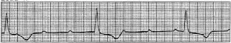
Current asset 1: /api/images_crop/form31_page-100_ocr.webp · 7472 bytesOCR source 1: https://pplines-online.bj.bcebos.com/deploy/official/paddleocr/pp-ocr-vl-16-online//c9258b04-4583-4ae9-8910-57b317d32a5e/markdown_3/imgs/img_in_image_box_414_37_883_126.jpg?authorization=bce-auth-v1%2FALTAKDN8mY5KlNI7zaRpLmOqrw%2F2026-06-18T05%3A40%3A11Z%2F-1%2F%2F3b8f69c19baa657304eaef35df3854c4c9fde9056b131cec78f2e7d6f6c1ebef
The initial therapeutic effect of hydrochlorothiazide in patients with hypertension is a result of decreased sodium reabsorption in which of the following parts of the nephron?
A Ascending limb of the loop of Henle
B Descending limb of the loop of Henle
C Collecting duct
D Distal tubule
E Proximal tubule
Correct: 4
Q18 · Block 1 Item 18 · nbme27_page-52
Behavioral/Nervous & Special Senses / Behavioral/Nervous & Special Senses / easy · options=5 · images=0
text-only
A 20-year-old woman is brought to the emergency department by her roommate 30 minutes after she ingested a large quantity of acetaminophen tablets during a suicide attempt. The physician asks her why she tried to kill herself. She replies tearfully, "My boyfriend told me that he doesn't want to see me again, and he won't return any of my phone calls. I loved him more than I've loved anyone else in my entire life. I was going to marry him! Now I hate his guts for what he's done to me. I just wanted to die." On further questioning, the physician learns that she had only two dates with this man. She tells the physician, "I just can't bear being alone. But I can tell that you understand. You're the only doctor who's ever understood how I feel." This patient most likely has which of the following types of personality disorders?
A Borderline
B Dependent
C Histrionic
D Narcissistic
E Obsessive-compulsive
Correct: 1
Q19 · Block 1 Item 19 · nbme28_q0003
MSK/Skin / MSK/Skin / easy · options=5 · images=0
text-only
Moving the forearm against resistance from palm-down to palm-up (supination) position requires the use of which of the following muscles? A) Biceps brachii B) Brachialis C) Triceps D) Flexor carpi radialis E) Pronator teres
Multisystem / Multisystem / hard · options=5 · images=1
ocr-updated
A newborn born at 36 weeks' gestation dies 3 days later. The photograph shown is of a section of brain as seen at autopsy. Which of the following is the most likely underlying disease? A) Biliary atresia B) Cyanotic congenital heart disease C) Hemolytic disease of the newborn D) Neonatal meningitis E) Respiratory distress syndrome
A A) Biliary atresia
B B) Cyanotic congenital heart disease
C C) Hemolytic disease of the newborn
D D) Neonatal meningitis
E E) Respiratory distress syndrome
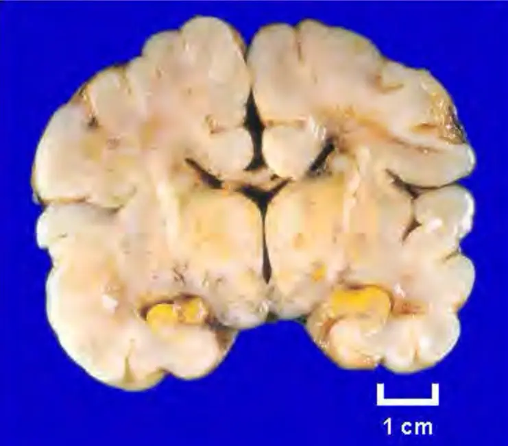
Current asset 1: /api/images_crop/nbme28_q0113_ocr.webp · 18508 bytesOCR source 1: https://pplines-online.bj.bcebos.com/deploy/official/paddleocr/pp-ocr-vl-16-online//f636a87d-1e8f-4e7f-bfa9-7af4d68c58dc/markdown_3/imgs/img_in_image_box_2768_172_3509_823.jpg?authorization=bce-auth-v1%2FALTAKDN8mY5KlNI7zaRpLmOqrw%2F2026-06-18T05%3A40%3A47Z%2F-1%2F%2Fbc7282687f1f60388bbee6f20114d9b7693999503c698f0b696eb157a2ef206b
Correct: 1
Q22 · Block 2 Item 2 · nbme28_q0189
Multisystem / Multisystem / medium · options=5 · images=1
ocr-exactlegacy-image
A 12-year-old girl is brought to the physician because of a rash on her left buttock for the past 2 days. The rash developed after the family returned from a 2-week-long early summer vacation in Maine. Her vital signs are within normal limits. A photograph of the lesion is shown. The likely cause of this patient's infection is taxonomically and morphologically most similar to the infectious agent of which of the following conditions? A) Bacillary angiomatosis B) Chancroid C) Leptospirosis D) Lymphogranuloma venereum E) Q fever
A A) Bacillary angiomatosis
B B) Chancroid
C C) Leptospirosis
D D) Lymphogranuloma venereum
E E) Q fever
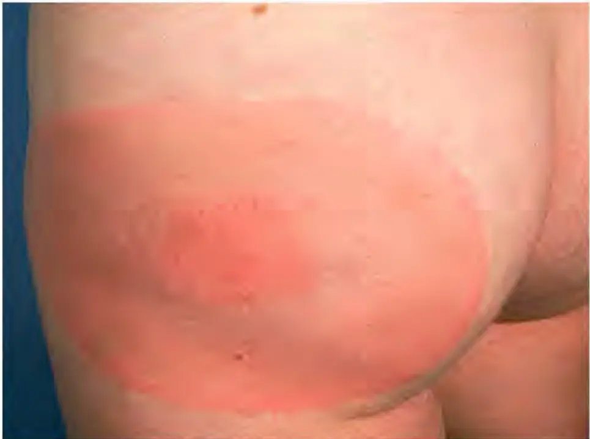
Current asset 1: /api/images_crop/nbme28_q0189_ocr.webp · 9906 bytesOCR source 1: https://pplines-online.bj.bcebos.com/deploy/official/paddleocr/pp-ocr-vl-16-online//4999d5d4-3d61-4470-a57f-fb34f947f9db/markdown_0/imgs/img_in_image_box_1448_168_2413_887.jpg?authorization=bce-auth-v1%2FALTAKDN8mY5KlNI7zaRpLmOqrw%2F2026-06-18T05%3A40%3A23Z%2F-1%2F%2Fc4a7866e0f228c60fd4328b79ed91b9e0a36e7317e2619c3e56cbde37e65712d
Correct: 3
Q23 · Block 2 Item 3 · nbme29_q0009
Multisystem / Multisystem / medium · options=5 · images=1
ocr-exactlegacy-image
A previously healthy 16-year-old girl comes to the physician because of a progressive rash over her cheeks and the bridge of her nose during the past 5 weeks. She also has a 1-week history of stiffness of her fingers in the mornings that gradually resolves during the day. A photograph of the face is shown. Serum studies show an antinuclear antibody titer of 1:1280 and C3 concentration of 71 mg/dL (N=100–200). The pathogenesis of this patient's cutaneous and musculoskeletal symptoms is most similar to that of which of the following conditions?
A A) Acute rheumatic fever
B B) Drug-induced serum sickness
C C) Graft-versus-host disease
D D) Immune response to PPD skin testing
E E) Peanut allergy
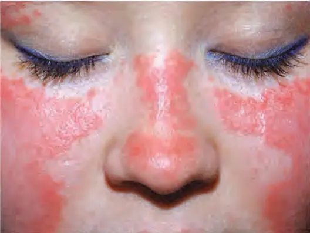
Current asset 1: /api/images_crop/nbme29_q0009_ocr.webp · 12696 bytesOCR source 1: https://pplines-online.bj.bcebos.com/deploy/official/paddleocr/pp-ocr-vl-16-online//4873564c-3531-4ede-9116-c36358b0670f/markdown_4/imgs/img_in_image_box_534_93_1062_490.jpg?authorization=bce-auth-v1%2FALTAKDN8mY5KlNI7zaRpLmOqrw%2F2026-06-18T05%3A40%3A28Z%2F-1%2F%2Fd396d24c17ab8dc3b6318dce9cdc7e3640aa482aa5bc1d9378c6b14e06595aa0
Correct: 2
Q24 · Block 2 Item 4 · nbme29_q0193
Multisystem / Multisystem / medium · options=8 · images=2
ocr-exactlegacy-imagesuspecttiny current image (4742 bytes)
Hematoxylin and eosin 43. A 58-year-old woman comes to the physician because of a 6-month history of shortness of breath and chronic nonproductive cough. She has a 2-year history of difficulty swallowing, joint stiffness, and diffuse tightening of the skin of the face, neck, shoulders, arms, and fingers. She has had significant sensitivity to cold weather for 20 years, and she says that her hands turn white when they are exposed to the cold. Current medications include a histamine ( $ H_{2} $) blocking agent for a long-standing history of esophageal reflux. Biopsy specimens of the skin from 1 year ago are shown in the photomicrographs. Examination of the hands shows cutaneous ulceration, clawlike flexion deformity, and decreased joint mobility. An autoimmune disorder is suspected. Which of the following pulmonary disorders is most likely in this patient?
A A) Adenocarcinoma
B B) Bronchiectasis
C C) Emphysema
D D) Granulomatous inflammation
E E) Interstitial fibrosis
F F) Pneumonia
G G) Pulmonary embolism
H H) Squamous cell carcinoma
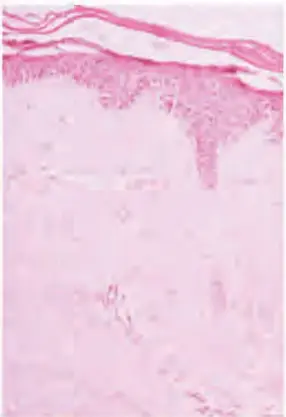
Current asset 1: /api/images_crop/nbme29_q0193_ocr01.webp · 4742 bytesOCR source 1: https://pplines-online.bj.bcebos.com/deploy/official/paddleocr/pp-ocr-vl-16-online//362481e6-ea17-4f90-86a0-b6b0060c7544/markdown_3/imgs/img_in_image_box_487_90_773_507.jpg?authorization=bce-auth-v1%2FALTAKDN8mY5KlNI7zaRpLmOqrw%2F2026-06-18T05%3A40%3A05Z%2F-1%2F%2F5fc5f0f8fa159d223f392106476ec43a682d0409e304edab0a65502b70c9d1b9
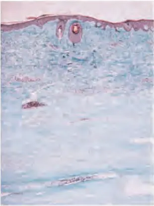
Current asset 2: /api/images_crop/nbme29_q0193_ocr02.webp · 8330 bytesOCR source 2: https://pplines-online.bj.bcebos.com/deploy/official/paddleocr/pp-ocr-vl-16-online//362481e6-ea17-4f90-86a0-b6b0060c7544/markdown_3/imgs/img_in_image_box_799_93_1109_509.jpg?authorization=bce-auth-v1%2FALTAKDN8mY5KlNI7zaRpLmOqrw%2F2026-06-18T05%3A40%3A05Z%2F-1%2F%2Fc06fdf6a5bfb06265f557c43f9d80c5ff4eeece989aad9eb19eb85847f17b479
Correct: 5
Q25 · Block 2 Item 5 · nbme29_q0002
Behavioral/Nervous & Special Senses / Behavioral/Nervous & Special Senses / hard · options=5 · images=0
text-only
A 65-year-old man comes to the emergency department because of a 1-week history of blood in his sputum. A mass is found on a radiograph. Bronchoscopy is planned. In order to pass the bronchoscope through the oropharynx to the lungs without eliciting a gag reflex, the pharynx is anesthetized. The afferent limb of the reflex is most likely to be blocked by anesthesia to which of the following cranial nerves?
A A) Trigeminal
B B) Facial
C C) Glossopharyngeal
D D) Vagus
E E) Hypoglossal
Correct: 3
Q26 · Block 2 Item 6 · form30_page-101
Respiratory / Respiratory / medium · options=5 · images=0
text-only
A 32-year-old woman comes to the physician because of a 7-day history of sneezing, nasal stuffiness, and watery eyes. She has a history of similar symptoms each spring while gardening. Her temperature is 37°C (98.6°F). Which of the following types of cells are most likely to be increased in her nasal secretions as a result of this reaction?
A Basophils
B Eosinophils
C Lymphocytes
D Mast cells
E Monocytes
Correct: 2
Q27 · Block 2 Item 7 · form30_page-111
Reproductive/Endocrine / Reproductive/Endocrine / medium · options=6 · images=0
text-only
A 42-year-old woman comes to the physician 2 weeks after she found a nodule in the left side of her neck. She is otherwise asymptomatic. Physical examination shows no other abnormalities. She undergoes a thyroid scan with ¹²³I, a nondestructive isotope. After 1 week, the largest amount of circulating ¹²³I would most likely be in which of the following?
A Free thyroxine (FT₄)
B Free triiodothyronine (FT₃)
C Triiodothyronine (T₃) bound to thyroxine (T₄)-binding globulin
D T₄ bound to transthyretin
E T₄ bound to T₄-binding globulin
F T₄ bound to transthyretin
Correct: 5
Q28 · Block 2 Item 8 · form30_page-147
Cardiovascular / Cardiovascular / medium · options=7 · images=0
text-only
A 20-year-old man comes to the emergency department 30 minutes after fainting while playing basketball. He has felt tired for the past 3 months. A systolic murmur is heard at the left sternal border. The murmur increases when he strains against a closed glottis and decreases when he lies supine with his legs elevated. Which of the following is the most likely diagnosis?
A Aortic regurgitation
B Aortic stenosis
C Idiopathic hypertrophic obstructive cardiomyopathy
D Mitral regurgitation
E Mitral stenosis
F Pulmonic regurgitation
G Tricuspid stenosis
Correct: 3
Q29 · Block 2 Item 9 · form31_page-117
Renal/Urinary / Renal/Urinary / medium · options=5 · images=2
legacy-image
A 31-year-old man is admitted to the hospital because of flank and abdominal pain. A CT scan of the abdomen shows an aneurysm of the proximal portion of the superior mesenteric artery. This aneurysm is most likely to compress and impede venous blood flow from which of the following organs?
A Left kidney
B Liver
C Right kidney
D Right suprarenal (adrenal) gland
E Spleen
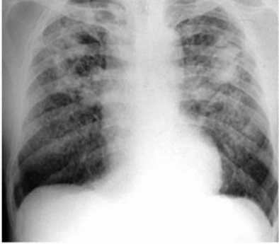
Current asset 1: /api/images_crop/form31_page-117.webp · 13264 bytes
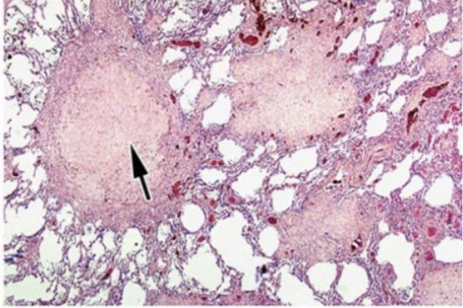
Current asset 2: /api/images_crop/form31_page-117_2.webp · 66424 bytes
Correct: 1
Q30 · Block 2 Item 10 · form31_page-121
Cardiovascular / Cardiovascular / medium · options=5 · images=0
text-only
A 33-year-old woman comes to the emergency department because of a 4-day history of progressive shortness of breath that is worse at night. Five days ago, she had an uncomplicated vaginal delivery of a female newborn at term. Her respirations are 22/min. Bilateral crackles are heard on auscultation of the chest. Cardiac examination shows the point of maximal impulse to be displaced laterally and an S3 gallop. An ECG shows sinus tachycardia and nonspecific ST-T segment and T-wave changes. Echocardiography shows a left ventricular ejection fraction of 30%, global hypokinesis, and mild mitral regurgitation. Which of the following is the most likely diagnosis?
A Cardiomyopathy
B Coronary artery disease
C Hypertensive heart disease
D Pulmonary embolism
E Valvular heart disease
Correct: 1
Q31 · Block 2 Item 11 · form31_page-124
Reproductive/Endocrine / Reproductive/Endocrine / medium · options=5 · images=0
text-only
A 24-year-old woman has the onset of fever, chills, and lower abdominal pain on the second day of her menstrual period. Examination shows tenderness localized to the fallopian tubes and ovaries. A complete blood count shows leukocytosis. Which of the following is the most likely causal organism?
A Gardnerella vaginalis
B Neisseria gonorrhoeae
C Staphylococcus aureus
D Streptococcus agalactiae (group B)
E Trichomonas vaginalis
Correct: 2
Q32 · Block 2 Item 12 · nbme27_page-101
Behavioral/Nervous & Special Senses / Behavioral/Nervous & Special Senses / medium · options=5 · images=0
text-only
A 13-year-old girl is brought to the physician by her mother because of a 5-month history of behavioral problems. The mother states that her daughter alternates from being sad and socially withdrawn to being extremely angry and aggressive. After further evaluation, a diagnosis of bipolar disorder is made. Treatment with valproic acid, which inhibits histone deacetylase, is started. This drug is most likely to affect which of the following processes in this patient?
A mRNA splicing
B Polyadenylation
C Post-translational processing
D Transcription
E Translation
Correct: 4
Q33 · Block 2 Item 13 · nbme27_page-106
Cardiovascular / Cardiovascular / medium · options=5 · images=1
legacy-image
A 79-year-old woman with a history of severe dementia, type 2 diabetes mellitus, and hypertension is brought to the emergency department by her son because of chest pain and agitation for 4 hours. She had smoked 2 packs of cigarettes daily until the age of 70 years, when she quit. The son is not aware of the patient's medication regimen. Her pulse is 120/min, respirations are 32/min, and blood pressure is 180/100 mm Hg. Crackles are heard in both lung bases on auscultation of the chest. Cardiac examination shows a systolic ejection murmur at the apex and a regular rhythm. An ECG shows ST-segment elevation in the anterolateral leads. A chest x-ray shows a mildly enlarged cardiac silhouette. Which of the following is the most likely diagnosis?
A Acute coronary syndrome
B Acute pericarditis
C Bilateral pneumonia
D Cerebrovascular event
E Pulmonary embolism
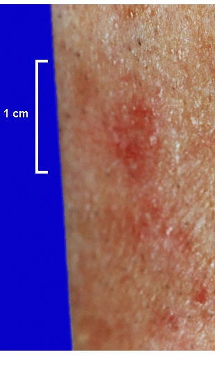
Current asset 1: /api/images_crop/nbme27_page-106.webp · 27324 bytes
Correct: 1
Q34 · Block 2 Item 14 · nbme27_page-14
MSK/Skin / MSK/Skin / medium · options=5 · images=0
text-only
A 34-year-old man who is seropositive for HIV has a neoplasm manifested as violaceous raised cutaneous plaques (erythematous cutaneous plaques). Examination of tissue obtained on biopsy of the neoplasm is most likely to show which of the following?
A Dense, relatively acellular fibrous tissue with few typical fibroblasts
B Large polygonal and giant cells with myofibrils
C Malignant gland-forming cells with mucin
D Poorly differentiated malignant squamous cells
E Proliferating spindle cells forming slit-like spaces filled with blood
Correct: 5
Q35 · Block 2 Item 15 · nbme28_q0016
MSK/Skin / MSK/Skin / medium · options=8 · images=0
text-only
MarkNational Board of Medical Examiners $ ^{®} $ Comprehensive Basic Science Self-Assessment 16. A 20-year-old woman comes to the emergency department 30 minutes after slipping on ice and extending her hand to break her fall. Palpation of the anatomic snuff-box produces pain. A wrist x-ray is most likely to show a fracture of which of the following carpal bones? A) Scaphoid B) Lunate C) Triquetrum D) Pisiform E) Trapezium F) Trapezoid G) Capitate H) Hamate
A A) Scaphoid
B B) Lunate
C C) Triquetrum
D D) Pisiform
E E) Trapezium
F F) Trapezoid
G G) Capitate
H H) Hamate
Correct: 4
Q36 · Block 2 Item 16 · nbme28_q0054
Behavioral/Nervous & Special Senses / Behavioral/Nervous & Special Senses / medium · options=5 · images=0
text-only
A 32-year-old primigravid woman delivers a healthy 3402-g (7-lb 8-oz) male newborn after an uncomplicated cesarean delivery because of a nonreassuring fetal stress test. Two days prior to discharge from the hospital, she has persistent numbness of the area surrounding the abdominal incision. The physician assures the patient that sensation will gradually return as the nerves regenerate. Which of the following best describes the rate-limiting step in this patient's return to normal sensation? A) Dorsal root ganglion cell proliferation B) Fast anterograde axonal transport C) Fibroblast proliferation D) Retrograde axonal transport E) Slow anterograde axonal transport
A A) Dorsal root ganglion cell proliferation
B B) Fast anterograde axonal transport
C C) Fibroblast proliferation
D D) Retrograde axonal transport
E E) Slow anterograde axonal transport
Correct: 4
Q37 · Block 2 Item 17 · nbme29_q0005
Reproductive/Endocrine / Reproductive/Endocrine / medium · options=7 · images=0
text-only
A 70-year-old woman comes to the physician for a follow-up examination. She had breast cancer 5 years ago and underwent partial mastectomy of the left breast at that time. She has received treatment with tamoxifen since then. Physical examination and mammography show no evidence of recurrence. Which of the following mechanisms most likely explains the beneficial effect of tamoxifen in treating this patient?
A A) Competitive inhibition of estradiol activation of cyclin D1 and E2 proteins
B B) Competitive inhibition of estradiol binding to its receptor
C C) Competitive inhibition of estradiol synthase in ovaries and adrenal cortex
D D) Downregulation of bcl-2
E E) Downregulation of estrogen receptors
F F) Increased estradiol catabolism by CYP3A
G G) Increased renal excretion of synthesized estradiol
A 54-year-old man comes to the physician because of a 3-day history of low back pain. His temperature is 38.3°C (101°F), pulse is 75/min, and blood pressure is 120/80 mm Hg. Physical examination shows right-sided flank tenderness to percussion. A CT scan of the abdomen shows a lesion consistent with an abscess along the posterior medial aspect of the right kidney. Extension of this process into this patient's pelvis is most likely to occur along which of the following surfaces?
An investigator studying bronchial circulation interrupts this circulation in experimental animals. As a result, which of the following processes is most likely to be affected?
A Alveolar macrophage production
B Clearance of pulmonary edema
C Delivery of nutrients to the tracheal wall
D Hypoxic pulmonary vasoconstriction
E Surfactant production
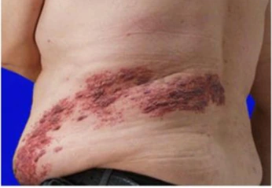
Current asset 1: /api/images_crop/form31_page-104.webp · 12348 bytes
A 70-year-old man has coronary artery bypass grafting and aortic valve replacement. Immediately after the operation, his blood pressure is 80/40 mm Hg, and he requires an intra-aortic balloon pump and intravenous infusion of dopamine. After 24 hours of treatment, his blood pressure is 140/80 mm Hg. Serum creatinine concentration is 4.5 mg/dL (preoperative value 1 mg/dL). Urine output is 15 mL/h. Which of the following best explains these findings?
A Acute interstitial nephritis from dopamine
B Acute tubular necrosis from ischemia
C Atheromatous emboli dislodged by the balloon pump
D Normal postoperative renal function
E Toxic acute tubular necrosis induced by hemolysis of erythrocytes
Correct: 2
Q41 · Block 3 Item 1 · form31_page-96
MSK/Skin / MSK/Skin / medium · options=6 · images=2
ocr-exactocr-updated
A 35-year-old man comes to the office because of a 3-month history of an enlarging, painless lump on the back of his left thigh. He also has had weakness in his left thigh and leg. Physical examination shows a 7-cm, hard, nonmobile swelling on the left posterior thigh. Sensation to pinprick is decreased along the posterior thigh and below the knee. Sagittal and axial views from a CT scan of the left thigh are shown. A biopsy specimen of the lump confirms a rhabdomyosarcoma. The most likely cause of the findings in this patient is compression of which of the following nerves?
A Femoral
B Ilioinguinal
C Lateral femoral cutaneous
D Obturator
E Posterior cluneal
F Sciatic
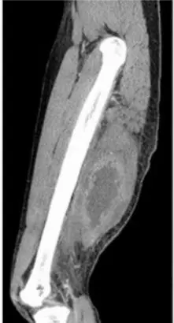
Current asset 1: /api/images_crop/form31_page-96_ocr01.webp · 5368 bytesOCR source 1: https://pplines-online.bj.bcebos.com/deploy/official/paddleocr/pp-ocr-vl-16-online//143d25a5-e4f9-459a-8ff1-1198133cf18d/markdown_3/imgs/img_in_image_box_8_6_229_416.jpg?authorization=bce-auth-v1%2FALTAKDN8mY5KlNI7zaRpLmOqrw%2F2026-06-18T05%3A40%3A00Z%2F-1%2F%2F130e4ccd1e47167c6b24fa7b19cf18cd6d00d0067390f894952f07ed5d097f83
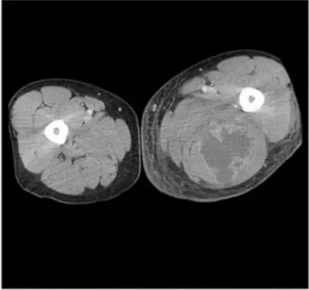
Current asset 2: /api/images_crop/form31_page-96_ocr02.webp · 6098 bytesOCR source 2: https://pplines-online.bj.bcebos.com/deploy/official/paddleocr/pp-ocr-vl-16-online//143d25a5-e4f9-459a-8ff1-1198133cf18d/markdown_3/imgs/img_in_image_box_238_6_681_421.jpg?authorization=bce-auth-v1%2FALTAKDN8mY5KlNI7zaRpLmOqrw%2F2026-06-18T05%3A40%3A00Z%2F-1%2F%2Fe2b6b83f57bf2468b1cfc662d0324e07930ab3b0f3935cd9871de9319c5f1374
Correct: 6
Q42 · Block 3 Item 2 · nbme28_q0095
Cardiovascular / Cardiovascular / medium · options=5 · images=1
ocr-updated
A 56-year-old woman has recently diagnosed carcinoma of the breast. An x-ray of the chest shows a tumor next to the right side of the heart. An enhanced CT scan with the tumor invading the pericardium is shown. Which of the following structures is most likely involved? A) Coronary sinus B) Greater splanchnic vein C) Right phrenic nerve D) Right vagus nerve E) Thoracic duct
A A) Coronary sinus
B B) Greater splanchnic vein
C C) Right phrenic nerve
D D) Right vagus nerve
E E) Thoracic duct
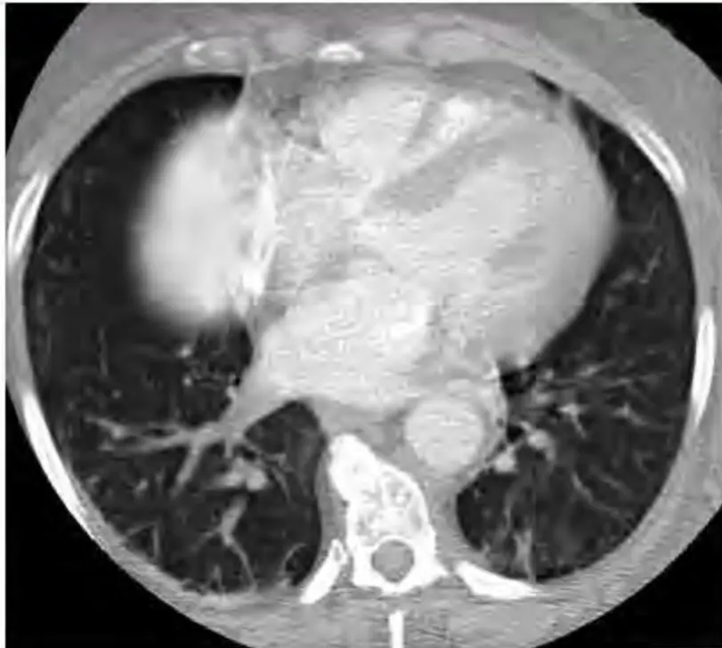
Current asset 1: /api/images_crop/nbme28_q0095_ocr.webp · 22694 bytesOCR source 1: https://pplines-online.bj.bcebos.com/deploy/official/paddleocr/pp-ocr-vl-16-online//0a992822-a86e-4abe-92af-2f44025c348c/markdown_0/imgs/img_in_image_box_2982_169_3793_897.jpg?authorization=bce-auth-v1%2FALTAKDN8mY5KlNI7zaRpLmOqrw%2F2026-06-18T05%3A39%3A52Z%2F-1%2F%2F56892af905abd2ee0af8a4a963b2e4437b37cb3fe53b4b4acd5fbe434045e4a0
Correct: 4
Q43 · Block 3 Item 3 · nbme29_q0025
Respiratory / Respiratory / medium · options=6 · images=1
legacy-image
A study is conducted to determine the effects of drug X on respiratory function. The respiratory tracing of an experimental animal is shown. Drug X was administered at the arrow. Drug X is most likely which of the following?
A A) Lidocaine
B B) Morphine sulfate
C C) Pentobarbital
D D) Potassium chloride
E E) Tetrodotoxin
F F) Tubocurarine
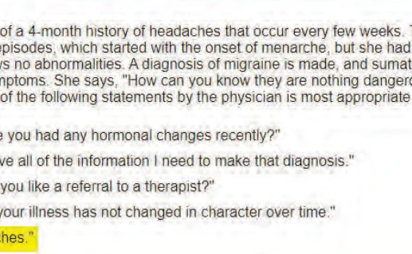
Current asset 1: /api/images_crop/nbme29_q0025_img01.webp · 46908 bytes
A 66-year-old man is brought to the emergency department 30 minutes after sustaining injuries in a motor vehicle collision. He is pronounced dead on arrival. A photograph of the left kidney and a photomicrograph of a section of the distal left ureter taken at autopsy are shown. Examination of the right kidney and ureter shows no abnormalities. Which of the following was the most likely predisposing factor in the development of the ureteral lesion in this patient?
A Alcoholism
B Arylamine exposure
C Cigarette smoking
D Radiation exposure
E Schistosomiasis
F Vinyl chloride exposure
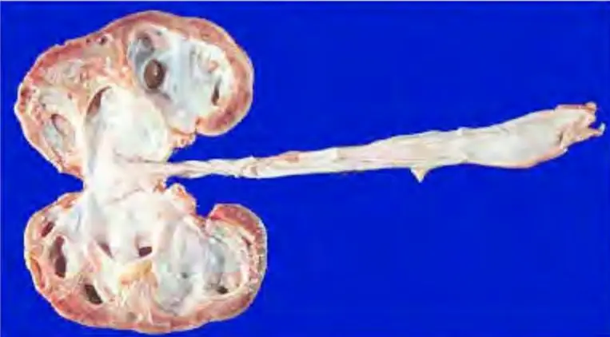
Current asset 1: /api/images_crop/nbme27_page-123_ocr01.webp · 15872 bytesOCR source 1: https://pplines-online.bj.bcebos.com/deploy/official/paddleocr/pp-ocr-vl-16-online//d3e72105-c736-4d0c-956a-035b4fd2ebd9/markdown_4/imgs/img_in_image_box_2070_171_2833_593.jpg?authorization=bce-auth-v1%2FALTAKDN8mY5KlNI7zaRpLmOqrw%2F2026-06-18T05%3A39%3A45Z%2F-1%2F%2Fae2d24d8de401304d176e88003ff005adcf28544c940c2e0ee427a27cb670d1c
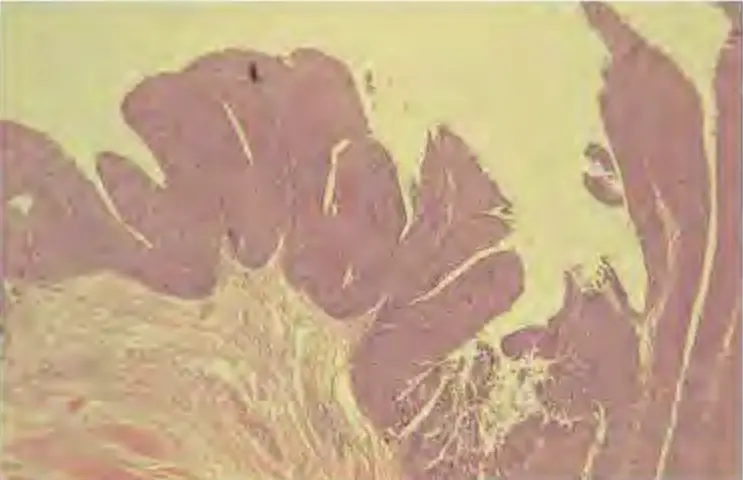
Current asset 2: /api/images_crop/nbme27_page-123_ocr02.webp · 15146 bytesOCR source 2: https://pplines-online.bj.bcebos.com/deploy/official/paddleocr/pp-ocr-vl-16-online//d3e72105-c736-4d0c-956a-035b4fd2ebd9/markdown_4/imgs/img_in_image_box_2071_623_2814_1103.jpg?authorization=bce-auth-v1%2FALTAKDN8mY5KlNI7zaRpLmOqrw%2F2026-06-18T05%3A39%3A45Z%2F-1%2F%2Fed00a7cc51725f39c5a9a1486ad2eeceab46bea473f2e9fb505b3459c15fc4de
Correct: 3
Q45 · Block 3 Item 5 · form31_page-12
Behavioral/Nervous & Special Senses / Behavioral/Nervous & Special Senses / hard · options=5 · images=1
ocr-updated
A 30-year-old primigravid woman at 18 weeks' gestation comes to the physician for a prenatal visit. Physical examination shows a uterus consistent in size with an 18-week gestation. Ultrasonography shows several intracranial anomalies, including a single ventricle, small cerebrum, fused thalami, and agenesis of the corpus callosum. These findings were most likely caused by the failure of which of the following structures to differentiate?
A Diencephalon
B Mesencephalon
C Prosencephalon
D Rhombencephalon
E Telencephalon
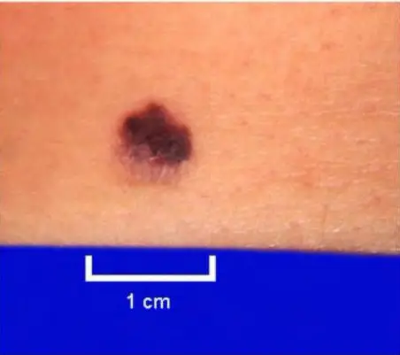
Current asset 1: /api/images_crop/form31_page-12_ocr.webp · 5814 bytesOCR source 1: https://pplines-online.bj.bcebos.com/deploy/official/paddleocr/pp-ocr-vl-16-online//0e23e03c-53a8-4d99-9a27-c25bd0db50e7/markdown_1/imgs/img_in_image_box_18_16_470_417.jpg?authorization=bce-auth-v1%2FALTAKDN8mY5KlNI7zaRpLmOqrw%2F2026-06-18T05%3A40%3A15Z%2F-1%2F%2F80afb78b78125fbfbe728ad465959d46a4783db2483e0b9049da0a32c6021342
Correct: 3
Q46 · Block 3 Item 6 · nbme27_page-128
Behavioral/Nervous & Special Senses / Behavioral/Nervous & Special Senses / hard · options=6 · images=0
text-only
A 35-year-old man comes to the physician because of a tremor for 6 weeks. He has a 15-year history of schizophrenia treated with haloperidol. Physical examination shows bradykinesia, tremor, and cogwheel rigidity. Haloperidol is discontinued, and treatment with aripiprazole is started because it has a decreased likelihood of causing the same adverse effects. Which of the following types of interaction with the dopamine receptor best explains this decreased likelihood?
A Agonism
B Antagonism
C Inverse agonism
D Irreversible antagonism
E Partial agonism
F Reversible antagonism
Correct: 5
Q47 · Block 3 Item 7 · nbme28_q0066
General Principles / General Principles / hard · options=6 · images=0
text-only
MarkComprehensive Basic Science Self-Assessment 1 hr 14 min 12 sec 16. A 60-year-old woman comes to the physician because of a 6-month history of pain in her hips and knees. Physical examination shows findings consistent with osteoarthritis, and the physician recommends ibuprofen. The patient refuses and asks about taking glucosamine. Which of the following responses by the physician is most appropriate? A) "Glucosamine hasn&#x 27;t been studied well enough for me to recommend it." B) "Glucosamine&#x 27;s side effects aren&#x 27;t listed. It may be more dangerous than we realize." C) "Ibuprofen has been proven effective for your condition." D) "What have you heard about using glucosamine to treat arthritis?" E) "Why did you come to me if you don&#x 27;t want to take what I recommend?" F) "You should really see a naturopathic doctor."
A A) "Glucosamine hasn't been studied well enough for me to recommend it."
B B) "Glucosamine's side effects aren't listed. It may be more dangerous than we realize."
C C) "Ibuprofen has been proven effective for your condition."
D D) "What have you heard about using glucosamine to treat arthritis?"
E E) "Why did you come to me if you don't want to take what I recommend?"
F F) "You should really see a naturopathic doctor."
Correct: 4
Q48 · Block 3 Item 8 · nbme29_q0054
General Principles / General Principles / hard · options=7 · images=0
text-only
During a clinical study, nine patients are given a new antihypertensive drug. One week later, their serum creatinine concentrations are measured, and the results are shown: Patient Serum Creatinine (mg/dL) 1 0.9 2 0.9 3 0.9 4 1.0 5 1.1 6 1.2 7 1.2 8 1.3 9 1.4 If one of the 0.9 values were now mistakenly entered as 1.2, which of the following would the most likely effect be on the mean, median, and mode? Mean Median Mode ○ A) $ \uparrow $ $ \uparrow $ $ \uparrow $ ○ B) $ \uparrow $ $ \uparrow $ no change ○ C) $ \uparrow $ no change no change ○ D) No change $ \uparrow $ $ \uparrow $ ○ E) No change $ \uparrow $ no change ○ F) No change no change no change
A P) atient
B A) $ \uparrow $ | $ \uparrow $ | $ \uparrow $
C B) $ \uparrow $ | $ \uparrow $ | no change
D C) $ \uparrow $ | no change | no change
E D) No change | $ \uparrow $ | $ \uparrow $
F E) No change | $ \uparrow $ | no change
G F) No change | no change | no change
Correct: 1
Q49 · Block 3 Item 9 · form30_page-105
MSK/Skin / MSK/Skin / medium · options=5 · images=1
ocr-updated
A 51-year-old woman comes to the physician because of a 5-month history of occasional vague hip and thigh pain when working in her garden. Physical examination shows no abnormalities. Laboratory studies show an increased serum alkaline phosphatase activity. An x-ray of her right hip and upper leg shows a dense thickening of the bony cortex in the femur. Which of the following is the most likely diagnosis?
A Osteitis deformans (Paget disease)
B Osteosarcoma
C Osteomalacia
D Osteomyelitis
E Osteoporosis
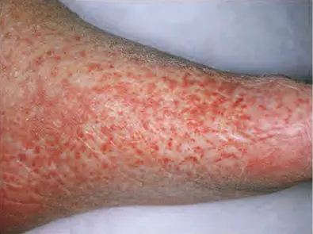
Current asset 1: /api/images_crop/form30_page-105_ocr.webp · 10332 bytesOCR source 1: https://pplines-online.bj.bcebos.com/deploy/official/paddleocr/pp-ocr-vl-16-online//284cfeb7-c277-4a3f-8e47-918435d89fbc/markdown_2/imgs/img_in_image_box_600_71_995_366.jpg?authorization=bce-auth-v1%2FALTAKDN8mY5KlNI7zaRpLmOqrw%2F2026-06-18T05%3A40%3A03Z%2F-1%2F%2Fb348e913a530d771d2a80001e34ff1a96fa915da07d46f9e9153fe8c85edeffd
Correct: 1
Q50 · Block 3 Item 10 · form30_page-112
Multisystem / Multisystem / medium · options=5 · images=0
text-only
A 5-year-old girl is brought to the physician because of a 4-day history of stumbling gait, muscle rigidity, slurred speech, and decreased cognitive function. Ophthalmologic examination shows decreased visual acuity and inability to discern colors. Assays of isolated muscle mitochondria show decreased ability to oxidize NADH but normal FADH₂ oxidation. Which of the following electron transport chain complexes is most likely impaired in this patient?
A I
B II
C III
D IV
E V
Correct: 1
Q51 · Block 3 Item 11 · form30_page-12
Reproductive/Endocrine / Reproductive/Endocrine / medium · options=6 · images=1
ocr-updatedsuspecttiny current image (2378 bytes)
A 38-year-old woman with asthma comes to the physician for advice concerning contraception. She is sexually active with one partner, and they use condoms inconsistently. Current medications include inhaled fluticasone and albuterol. She has smoked one-half pack of cigarettes daily for 20 years and drinks two alcoholic beverages daily. She does not use illicit drugs. Her maternal grandmother developed breast cancer at the age of 58 years. She is 157 cm (5 ft 2 in) tall and weighs 82 kg (180 lb). BMI is 33 kg/m². Her vital signs are within normal limits. Physical examination shows no other abnormalities. This patient should be advised to avoid the use of an oral contraceptive because of which of the following historical factors?
A Age
B Alcohol use
C Asthma
D Family history
E Obesity
F Tobacco use
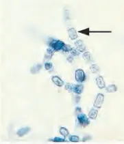
Current asset 1: /api/images_crop/form30_page-12_ocr.webp · 2378 bytesOCR source 1: https://pplines-online.bj.bcebos.com/deploy/official/paddleocr/pp-ocr-vl-16-online//98e093fd-344b-4d24-8f09-b36b648e1305/markdown_1/imgs/img_in_image_box_1364_74_1545_285.jpg?authorization=bce-auth-v1%2FALTAKDN8mY5KlNI7zaRpLmOqrw%2F2026-06-18T05%3A40%3A04Z%2F-1%2F%2F943de2aabfb54d91cff843fcf49fb2aec34ab5a315f863ff46198cc18f2cc25a
Correct: 6
Q52 · Block 3 Item 12 · form31_page-158
MSK/Skin / MSK/Skin / medium · options=6 · images=1
legacy-imagesuspecttiny current image (3236 bytes)
A 68-year-old man comes to the physician because of a 6-month history of progressive shortness of breath. He also has a 1-month history of nonproductive cough. He has a long history of joint pain treated with prednisone. He does not smoke cigarettes, but he was raised in a coal mining community. Vital signs are within normal limits. Physical examination shows no jugular venous distention or edema. There are small painless nodules along the extensor surface of both forearms, ulnar deviation, and swan neck deformities of the fingers. Bilateral diffuse crackles are heard on auscultation of the chest. A chest x-ray shows a diffuse fibronodular infiltrate with a right pleural effusion. A thoracentesis is done, and pleural fluid analysis shows straw-colored fluid containing 200 leukocytes/mm³ and a glucose concentration of 12 mg/dL (N=70). Which of the following is the most likely underlying cause of his current condition?
A Goodpasture syndrome
B Polymyalgia rheumatica
C Rheumatic fever
D Rheumatic heart disease
E Rheumatoid arthritis
F Granulomatosis with polyangiitis
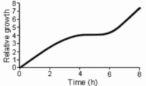
Current asset 1: /api/images_crop/form31_page-158.webp · 3236 bytes
Correct: 5
Q53 · Block 3 Item 13 · nbme27_page-117
Multisystem / Multisystem / medium · options=5 · images=0
text-only
A 2-month-old boy is brought to the physician because of hypotonia and poor feeding since birth. Physical examination shows large fontanels, midface hypoplasia, hepatomegaly, and cryptorchidism. Serum studies show increased concentrations of very-long-chain fatty acids, phytanic acid, and pipecolic acid. If this patient's hepatocytes were analyzed using electron microscopy, results would most likely show the absence of which of the following organelles?
A Endoplasmic reticulum
B Lysosomes
C Mitochondria
D Nucleoli
E Peroxisomes
Correct: 5
Q54 · Block 3 Item 14 · nbme27_page-16
MSK/Skin / MSK/Skin / medium · options=5 · images=0
text-only
A 40-year-old woman who is a construction worker comes to the physician because of pain in her shoulder that developed after she lifted a heavy beam. Physical examination shows weakness and pain only during external rotation of the arm at the shoulder. There is muscle wasting inferior to the spine of the scapula. Which of the following muscles is most likely injured?
A Infraspinatus
B Latissimus dorsi
C Subscapularis
D Supraspinatus
E Teres major
Correct: 1
Q55 · Block 3 Item 15 · nbme28_q0008
Multisystem / Multisystem / medium · options=5 · images=0
text-only
A 16-year-old boy with moderate intellectual disability is brought to the physician for a routine examination. There is a family history of mild and moderate intellectual disability in his mother and brother, respectively. Physical examination shows a long face, prominent ears, and moderately enlarged testicles. Which of the following best describes the genetic mechanism of this patient's disorder? A) Mutation in a mitochondrial gene B) Presence of an extra sex chromosome C) Translocation of a portion of an autosome D) Trinucleotide repeat mutation on the X chromosome E) Trisomy of an autosome
A A) Mutation in a mitochondrial gene
B B) Presence of an extra sex chromosome
C C) Translocation of a portion of an autosome
D D) Trinucleotide repeat mutation on the X chromosome
E E) Trisomy of an autosome
Correct: 4
Q56 · Block 3 Item 16 · nbme28_q0043
GI / GI / medium · options=5 · images=0
text-only
A 55-year-old man comes to the physician because of a 2-month history of increasing difficulty swallowing and regurgitation of undigested food. He also has noticed unusual rumbling sounds in his voice that he feels originate in his neck. Physical examination shows halitosis. A videofluoroscopic swallowing study shows a 4-cm, posterior midline pouch protruding between the thyropharyngeal and cricopharyngeal portions of the inferior pharyngeal constrictor muscle. These muscles are most likely innervated by which of the following nerves? A) Glossopharyngeal nerve B) Hypoglossal nerve C) Motor fibers from the vagus nerve D) Parasympathetic fibers from the vagus nerve E) Sympathetic fibers from the superior cervical ganglion
A A) Glossopharyngeal nerve
B B) Hypoglossal nerve
C C) Motor fibers from the vagus nerve
D D) Parasympathetic fibers from the vagus nerve
E E) Sympathetic fibers from the superior cervical ganglion
Correct: 2
Q57 · Block 3 Item 17 · nbme29_q0039
Multisystem / Multisystem / medium · options=6 · images=0
text-only
A 17-year-old boy is brought to the emergency department 15 minutes after he was found unarousable in the high school's bathroom. Approximately twenty 5-mg oxycodone tablets were found in his pocket. He has a history of using multiple illicit drugs. Which of the following sets of clinical findings is most likely in this patient? Pulse Respirations Pupil Examination Glasgow Coma Score ☐A) Increased normal constricted 12 ☐B) Increased decreased normal 15 ☐C) Normal increased dilated 15 ☐D) Normal normal dilated 7 ☐E) Decreased increased normal 12 ☐F) Decreased decreased constricted 7
A A) Increased | normal | constricted | 12
B B) Increased | decreased | normal | 15
C C) Normal | increased | dilated | 15
D D) Normal | normal | dilated | 7
E E) Decreased | increased | normal | 12
F F) Decreased | decreased | constricted | 7
Correct: 6
Q58 · Block 3 Item 18 · nbme29_q0196
Hemat/Lymph/Immune / Hemat/Lymph/Immune / medium · options=5 · images=0
text-only
An investigator is conducting a study of natural killer cells and their role in destroying malignant tumors in experimental animals. This study is most likely to show that natural killer cells are particularly effective in destroying malignant tumors with which of the following characteristics?
A A) Decreased expression of class I MHC molecules
B B) Expression of adherent forms of cellular proteins
C C) Expression of altered cell-surface glycolipids
A full-term female newborn is born with a symmetrically enlarged neck. The swelling is composed of a mass of endothelial cell-lined, cystically dilated spaces filled with lymph. The intervening stroma is scanty, and there are occasional lymphoid aggregates. Which of the following disorders is most likely in this newborn?
A 45-year-old man is brought to the emergency department because of a 45-minute history of abdominal pain, diaphoresis, and weakness. Two hours ago, he spilled a chemical on his left arm while mixing the solution for crop dusting. His respirations are 8/min, and blood pressure is 100/55 mm Hg. Physical examination shows salivation, wheezing, diaphoresis, and muscle weakness. After confirming the identity of the solution, the physician begins treatment with atropine and pralidoxime. The chemical solution most likely contained which of the following?
A Carbaryl
B 2,4-Dichlorophenoxyacetic acid
C Paraquat
D Parathion
E Pyrethrin
Correct: 4
Q61 · Block 4 Item 1 · nbme28_q0096
Cardiovascular / Cardiovascular / medium · options=5 · images=1
ocr-updated
A 25-year-old woman with a history of rheumatic fever and mitral valve dysfunction comes to the physician because of a 2-week history of fever and fatigue. She underwent a root canal procedure 1 month ago, before which she had taken a single dose of amoxicillin. Her temperature is $ 38.4^{\circ} $C ( $ 101.2^{\circ} $F). A grade 4/6 blowing murmur is heard on auscultation under the left axilla. A photomicrograph of a Gram stain of the organism recovered from a blood culture specimen is shown. On blood agar plates, the organism shows alpha hemolysis. Which of the following is the most likely causal organism? A) Enterococcus faecalis B) Group A beta-hemolytic streptococci C) Staphylococcus aureus D) Streptococcus mitis E) Streptococcus pneumoniae
A A) Enterococcus faecalis
B B) Group A beta-hemolytic streptococci
C C) Staphylococcus aureus
D D) Streptococcus mitis
E E) Streptococcus pneumoniae
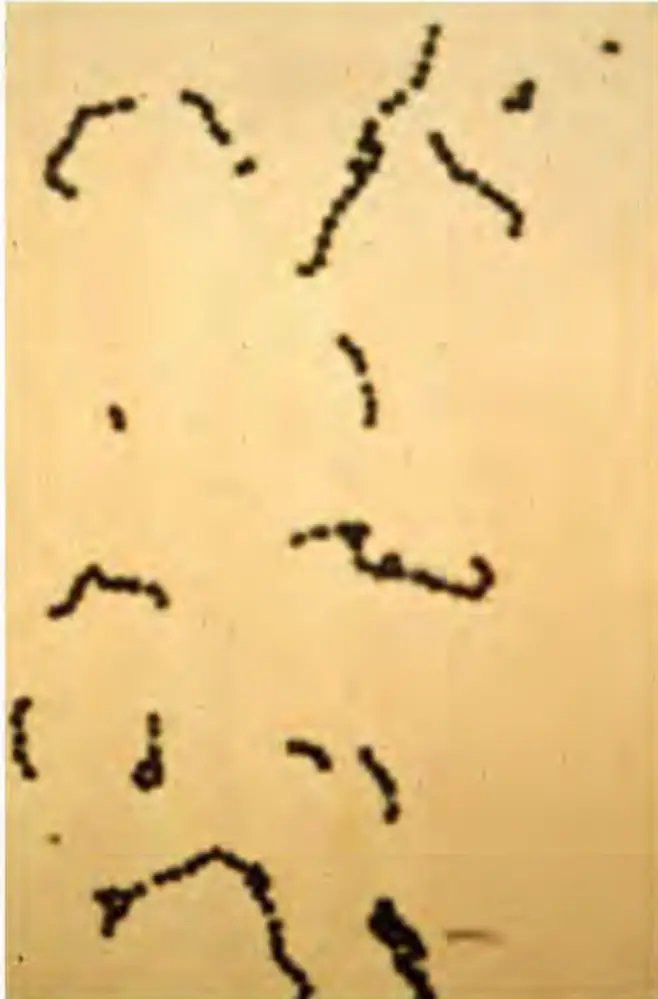
Current asset 1: /api/images_crop/nbme28_q0096_ocr.webp · 13472 bytesOCR source 1: https://pplines-online.bj.bcebos.com/deploy/official/paddleocr/pp-ocr-vl-16-online//0a992822-a86e-4abe-92af-2f44025c348c/markdown_1/imgs/img_in_image_box_3137_170_3795_1169.jpg?authorization=bce-auth-v1%2FALTAKDN8mY5KlNI7zaRpLmOqrw%2F2026-06-18T05%3A39%3A53Z%2F-1%2F%2F1ca5f49cdffa03288041117f9857b294145c3bafdd28756b95d1b6c91d6d8a6c
Correct: 3
Q62 · Block 4 Item 2 · nbme29_q0024
Renal/Urinary / Renal/Urinary / medium · options=7 · images=1
ocr-updated
A 12-year-old boy comes to the physician's office with dependent and periorbital edema, hypoalbuminemia and proteinuria. A biopsy of the kidney is performed. A photomicrograph of a representative glomerulus is shown (periodic acid-Schiff-stained). Which of the following is the most likely diagnosis?
A A) Diabetic glomerulosclerosis
B B) Diffuse proliferative nephritis
C C) Focal glomerulonephritis
D D) Focal segmental glomerulosclerosis
E E) Membranous nephropathy
F F) Minimal change nephrotic syndrome
G G) Poststreptococcal glomerulonephritis
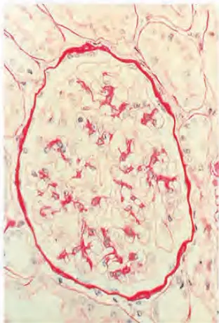
Current asset 1: /api/images_crop/nbme29_q0024_ocr.webp · 18688 bytesOCR source 1: https://pplines-online.bj.bcebos.com/deploy/official/paddleocr/pp-ocr-vl-16-online//f7641c49-5a34-40d2-be92-b04d8e8a33b1/markdown_4/imgs/img_in_image_box_1250_89_1562_548.jpg?authorization=bce-auth-v1%2FALTAKDN8mY5KlNI7zaRpLmOqrw%2F2026-06-18T05%3A39%3A50Z%2F-1%2F%2F7037842abb8ddf6d1ac3538fad4a284bc09e4b99aea7ccd28f49d2a3fb7d1a72
Correct: 6
Q63 · Block 4 Item 3 · form30_page-125
MSK/Skin / MSK/Skin / easy · options=5 · images=1
ocr-exactlegacy-imagesuspecttiny current image (3298 bytes)
A 27-year-old man comes to the physician because he is concerned about his skin. He says that he has had similar problems with hypopigmented skin for 2 years but that the condition has been exacerbated in recent months. A photograph of the affected skin is shown. The remainder of the physical examination shows no other abnormalities. Which of the following is the most likely causal organism?
A Candida albicans
B Epidermophyton floccosum
C Malassezia furfur
D Microsporum canis
E Trichophyton mentagrophytes
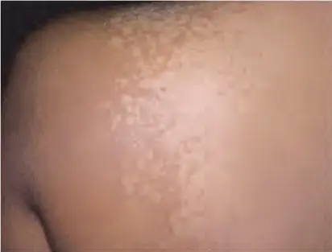
Current asset 1: /api/images_crop/form30_page-125_ocr.webp · 3298 bytesOCR source 1: https://pplines-online.bj.bcebos.com/deploy/official/paddleocr/pp-ocr-vl-16-online//ff4fc3cf-63f7-4a1b-af96-ad35449c36ce/markdown_1/imgs/img_in_image_box_590_70_1002_383.jpg?authorization=bce-auth-v1%2FALTAKDN8mY5KlNI7zaRpLmOqrw%2F2026-06-18T05%3A39%3A55Z%2F-1%2F%2Fea4682722cba02dda2ed293ed7515b52505084f80e859df5d3a86cf4775678d1
A 49-year-old woman with poorly controlled hypertension comes to the emergency department because of a 2-day history of progressive shortness of breath. Current medications are amlodipine, clonidine, enalapril, hydrochlorothiazide, and metoprolol. She has not taken any of her medications for 5 days because she ran out and could not afford to refill her prescriptions. Her pulse is 98/min, respirations are 32/min, and blood pressure is 240/120 mm Hg. Pulse oximetry on room air shows an oxygen saturation of 88%. Physical examination shows no significant ankle edema. Bilateral crackles are heard over all lung fields. Cardiac examination shows a loud S4. A chest x-ray shows pulmonary edema. An ECG is shown. Which of the following is the most likely mechanism of this patient's congestive heart failure?
A Atrial fibrillation
B Cardiac tamponade
C Diastolic dysfunction
D Dilated cardiomyopathy
E Myocardial ischemia
F Papillary muscle rupture
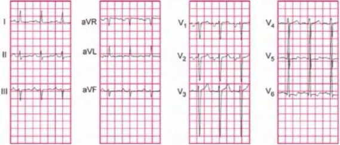
Current asset 1: /api/images_crop/form31_page-42_ocr01.webp · 13324 bytesOCR source 1: https://pplines-online.bj.bcebos.com/deploy/official/paddleocr/pp-ocr-vl-16-online//8c812034-2dad-4dcd-bd8b-0086236781b3/markdown_3/imgs/img_in_image_box_54_25_623_268.jpg?authorization=bce-auth-v1%2FALTAKDN8mY5KlNI7zaRpLmOqrw%2F2026-06-18T05%3A40%3A05Z%2F-1%2F%2F44127489eb4920f420266024d5628f26540d11666aa3d50bd927fd18441d6de0
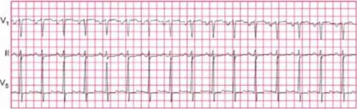
Current asset 2: /api/images_crop/form31_page-42_ocr02.webp · 12178 bytesOCR source 2: https://pplines-online.bj.bcebos.com/deploy/official/paddleocr/pp-ocr-vl-16-online//8c812034-2dad-4dcd-bd8b-0086236781b3/markdown_3/imgs/img_in_image_box_53_298_639_478.jpg?authorization=bce-auth-v1%2FALTAKDN8mY5KlNI7zaRpLmOqrw%2F2026-06-18T05%3A40%3A05Z%2F-1%2F%2Fe21cbbe770394f88491ace78494c01bd2eead4b8e788f9707458c45233c2acc9
Correct: 3
Q65 · Block 4 Item 5 · form31_page-64
Multisystem / Multisystem / hard · options=5 · images=0
text-only
A 6-month-old boy is brought to the emergency department after being found unresponsive in his crib. He is successfully resuscitated. His serum glucose concentration is 20 mg/dL. Urine contains dicarboxylic acids; there are no ketones. The most likely cause of these symptoms is a defect in which of the following?
A Amino acid catabolism
B Fatty acid β-oxidation
C Gluconeogenesis
D Glycogen storage
E Glycolysis
Correct: 2
Q66 · Block 4 Item 6 · form30_page-138
Reproductive/Endocrine / Reproductive/Endocrine / medium · options=5 · images=0
text-only
A 55-year-old man with type 1 diabetes mellitus comes to the physician because of intermittent burning pain of his feet during the past 4 months. Examination of the feet shows allodynia bilaterally. Sensation to pinprick is decreased. Motor strength, deep tendon reflexes, joint position, and vibration sense are normal. Which of the following is the most likely cause of the pain in this patient?
A Increased activation of glutamate receptors in the dorsal root ganglia
B Increased activity of presynaptic γ-aminobutyric acid receptors in the dorsal horn
C Increased activity of voltage-gated K+ channels in the thalamus
D Inhibition of vanilloid receptors in the dorsal root afferents
E Persistent activation of voltage-gated Na+ channels in the nociceptor
Correct: 5
Q67 · Block 4 Item 7 · form30_page-162
Multisystem / Multisystem / medium · options=8 · images=0
text-only
A 3-year-old boy has progressive coarsening of his facial features, hirsutism, hepatomegaly, and developmental delay. X-rays of the skeletal system show dysostosis multiplex. Which of the following is primarily involved in this condition?
A Cilia
B Cytosol
C Endoplasmic reticulum
D Lysosome
E Mitochondrion
F Peroxisome
G Plasma membrane
H Ribosome
Correct: 4
Q68 · Block 4 Item 8 · form31_page-0
Hemat/Lymph/Immune / Hemat/Lymph/Immune / medium · options=5 · images=1
ocr-updated
A 29-year-old woman develops headache and shortness of breath 10 minutes after a transfusion of packed red blood cells is begun. Her temperature is 37.8°C (100°F), pulse is 100/min, respirations are 20/min, and blood pressure is 90/60 mm Hg. The transfusion is stopped immediately. Laboratory studies show free hemoglobin in urine and plasma. Which of the following erythrocyte blood group antigens is the most likely cause of this patient's transfusion reaction?
A ABO
B Duffy
C Kell
D MN
E Rh
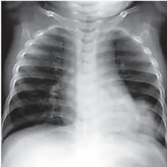
Current asset 1: /api/images_crop/form31_page-0_ocr.webp · 5736 bytesOCR source 1: https://pplines-online.bj.bcebos.com/deploy/official/paddleocr/pp-ocr-vl-16-online//7fab359a-1b42-4cd6-80ac-80bf73366ae8/markdown_4/imgs/img_in_image_box_1229_69_1566_406.jpg?authorization=bce-auth-v1%2FALTAKDN8mY5KlNI7zaRpLmOqrw%2F2026-06-18T05%3A40%3A01Z%2F-1%2F%2F7ef00efbabf4bb78ade2730f87803b78911f64fb08b71fcd9fb8d52906172eaf
Correct: 1
Q69 · Block 4 Item 9 · form31_page-126
Reproductive/Endocrine / Reproductive/Endocrine / medium · options=5 · images=0
text-only
A 68-year-old man is diagnosed with metastatic prostate cancer. The most appropriate treatment should include a drug with which of the following mechanisms of action?
A Androstenedione aromatase inhibitor
B Estrogen receptor partial agonist-antagonist
C Gonadotropin-releasing hormone agonist
D Microtubule function inhibitor
E Somatostatin receptor agonist
Correct: 3
Q70 · Block 4 Item 10 · nbme27_page-127
Behavioral/Nervous & Special Senses / Behavioral/Nervous & Special Senses / medium · options=5 · images=1
legacy-image
An investigator is studying the selective loss of neurons of an experimental animal model of Wernicke encephalopathy. It is found that a vitamin B1 (thiamine) deficiency in the animal causes downregulation of the glial high-affinity glutamate transporter before neurons are lost. Based on these findings, which of the following cells is most likely initially affected by this disease process?
A Astrocytes
B Ependymal cells
C Microglial cells
D Oligodendrocytes
E Schwann cells
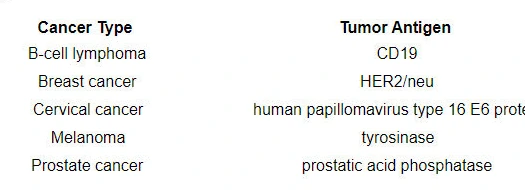
Current asset 1: /api/images_crop/nbme27_page-127.webp · 18720 bytes
Correct: 1
Q71 · Block 4 Item 11 · nbme27_page-158
Multisystem / Multisystem / medium · options=5 · images=1
ocr-updated
A 48-year-old man is brought to the emergency department because of a 2-day history of shortness of breath, fatigue, decreased appetite, and cough productive of blood-tinged sputum. He has a 2-month history of hypertension that is currently untreated. His temperature is 37.1°C (98.8°F), pulse is 88/min, respirations are 18/min, and blood pressure is 150/85 mm Hg. Physical examination shows no rash. A few scattered, coarse crackles are heard on auscultation. Laboratory studies show:
Serum creatinine: 5.1 mg/dL (1.2 mg/dL 1 month ago)
Urine:
- Blood: 3+
- Protein: 3+
- RBC: 50/hpf
- RBC casts: numerous
Which of the following is the most likely diagnosis?
A Acute tubular necrosis
B Chronic renal failure
C Goodpasture syndrome
D Prerenal azotemia
E Urinary tract obstruction
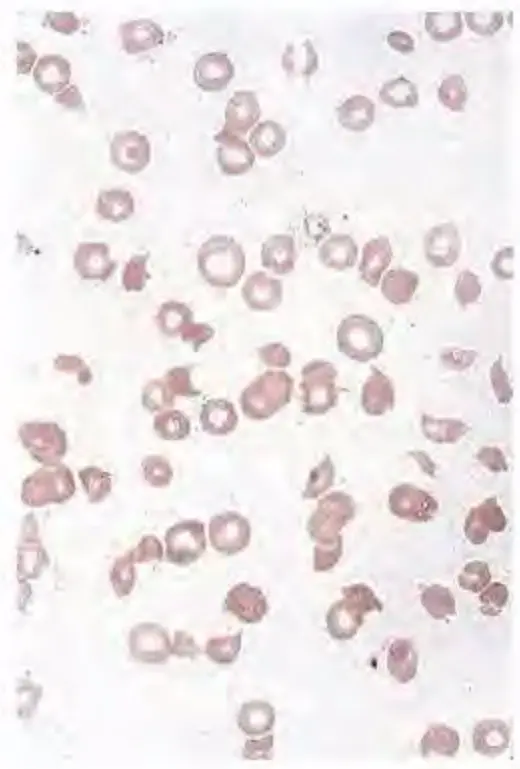
Current asset 1: /api/images_crop/nbme27_page-158_ocr.webp · 14494 bytesOCR source 1: https://pplines-online.bj.bcebos.com/deploy/official/paddleocr/pp-ocr-vl-16-online//a8d3d99a-8737-49ca-89ff-99042b517050/markdown_0/imgs/img_in_image_box_1821_160_2341_929.jpg?authorization=bce-auth-v1%2FALTAKDN8mY5KlNI7zaRpLmOqrw%2F2026-06-18T05%3A40%3A37Z%2F-1%2F%2F4144b09b9681089b9251799c8913278235574e927de73111f00aaf1e6aa398bc
Correct: 3
Q72 · Block 4 Item 12 · nbme27_page-167
Multisystem / Multisystem / medium · options=5 · images=0
text-only
An 86-year-old man is brought to the physician because of a 3-week history of several minor wounds that are healing slowly. He lives alone, and his diet consists of toast and tea. Physical examination shows several ecchymoses and numerous red and purple macules around hair follicles. Which of the following best explains these findings?
A Decreased synthesis of coagulation factors
B Inadequate hydroxylation of procollagen
C Increased hydroxylation of lysine
D Increased rate of synthesis of collagen peptides
E Oxidative injury to mature erythrocytes
Correct: 2
Q73 · Block 4 Item 13 · nbme28_q0014
Reproductive/Endocrine / Reproductive/Endocrine / medium · options=5 · images=1
ocr-updated
Which of the following is most directly responsible for concentrating testosterone in the lumen of the seminiferous tubules? A) Androgen-binding protein B) Follicle-stimulating hormone (FSH) C) FSH/gonadotropin-releasing hormone D) Inhibin E) Luteinizing hormone
A A) Androgen-binding protein
B B) Follicle-stimulating hormone (FSH)
C C) FSH/gonadotropin-releasing hormone
D D) Inhibin
E E) Luteinizing hormone
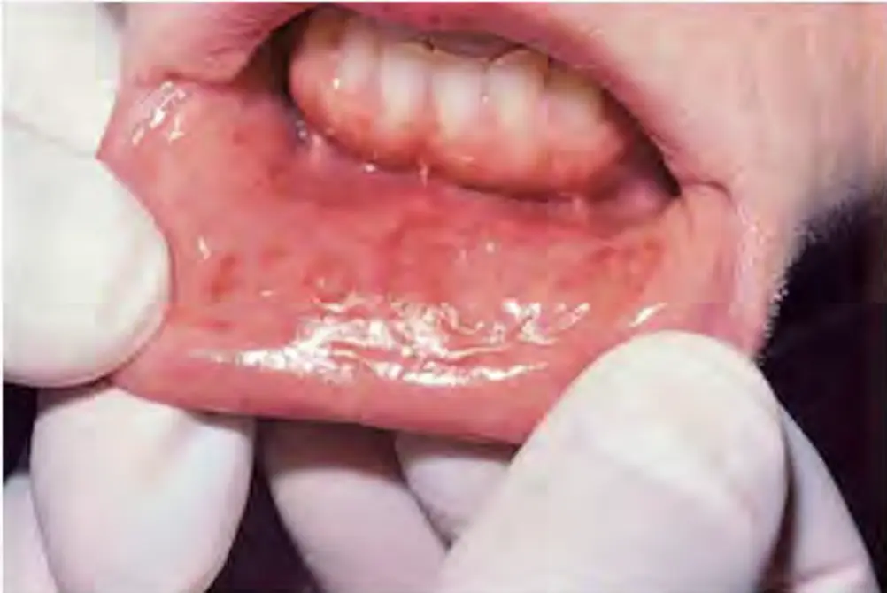
Current asset 1: /api/images_crop/nbme28_q0014_ocr.webp · 19332 bytesOCR source 1: https://pplines-online.bj.bcebos.com/deploy/official/paddleocr/pp-ocr-vl-16-online//81a932c2-2430-4689-b0c0-5e7860eb2c3f/markdown_0/imgs/img_in_image_box_1429_170_2431_840.jpg?authorization=bce-auth-v1%2FALTAKDN8mY5KlNI7zaRpLmOqrw%2F2026-06-18T05%3A39%3A52Z%2F-1%2F%2F2901eccdc6623ecaf00de025204c571f7f0ac9209ed9ae3b827e3d21b49742cd
Correct: 1
Q74 · Block 4 Item 14 · nbme28_q0018
Multisystem / Multisystem / medium · options=5 · images=0
text-only
During a period of 36 hours, an 80-year-old woman has increasingly severe abdominal pain followed by fever, chills, tachycardia, hypotension, and, finally, shock. Blood cultures grow Escherichia coli. Her condition worsens and, despite supportive therapy and antibiotics, she dies 4 days after the onset of the illness. Which of the following is the most likely cause of the initial hypotension? A) Excessive production of nitric oxide B) Generation of hydrogen peroxide C) Hemorrhage D) Induction of endothelial adhesion molecules E) Platelet aggregation
A A) Excessive production of nitric oxide
B B) Generation of hydrogen peroxide
C C) Hemorrhage
D D) Induction of endothelial adhesion molecules
E E) Platelet aggregation
Correct: 5
Q75 · Block 4 Item 15 · nbme28_q0107
Behavioral/Nervous & Special Senses / Behavioral/Nervous & Special Senses / medium · options=6 · images=0
text-only
A 54-year-old man with a 1-year history of multiple sclerosis has increasingly painful muscle spasms. An agonist that acts at which of the following receptors is most likely to alleviate the increased extensor tone and clonus? A) $ \gamma $-Aminobutyric acid $ _{B} $ B) Histamine-1 ( $ H_{1} $) C) Histamine-2 ( $ H_{2} $) D) Muscarinic-1 ( $ M_{1} $) E) Muscarinic-2 ( $ M_{2} $) F) Nicotinic
A A) $ \gamma $-Aminobutyric acid $ _{B} $
B B) Histamine-1 ( $ H_{1} $)
C C) Histamine-2 ( $ H_{2} $)
D D) Muscarinic-1 ( $ M_{1} $)
E E) Muscarinic-2 ( $ M_{2} $)
F F) Nicotinic
Correct: 4
Q76 · Block 4 Item 16 · nbme29_q0051
Multisystem / Multisystem / medium · options=8 · images=0
text-only
A newborn is evaluated for microcephaly, cataracts, and chorioretinitis. The mother developed an illness in the first trimester of pregnancy characterized by low-grade fever, a faint erythematous rash, occipital lymphadenopathy, and joint stiffness. The illness resolved within 1 week without complications. She did not receive any immunizations prior to the pregnancy. Which of the following viruses is the most likely cause of the newborn's illness?
A A) Cytomegalovirus
B B) Herpes simplex virus
C C) HIV
D D) HTLV-2
E E) Measles virus
F F) Reovirus
G G) Rubella virus
H H) Varicella-zoster virus
Correct: 7
Q77 · Block 4 Item 17 · nbme29_q0139
General Principles / General Principles / medium · options=5 · images=0
text-only
An investigator is conducting a randomized, double-blind, placebo-controlled clinical trial of a new medication for the treatment of mild insomnia in adults. A total of 2000 participants are enrolled in the study and randomized to one of two groups: 1000 participants receive the new medication (Group 1), and 1000 participants receive a placebo that appears identical to the medication (Group 2). Participants in both groups are instructed to take one pill 30 minutes before bedtime each day and to keep a sleep diary. After 1 month, each participant is interviewed, and the daily sleep diaries are reviewed. At follow-up, it is determined that 200 participants in Group 1 and 50 participants in Group 2 did not take the pill as directed. In accordance with intention-to-treat analysis, how should the data pertaining to all individuals who did not adhere to the instructions be treated?
A A) Analyze all nonadherent participants according to the group of the study to which each was randomized
B B) Exclude all nonadherent participants from analysis
C C) Exclude only nonadherent participants in Group 1 from analysis
D D) Exclude only nonadherent participants in Group 2 from analysis
E E) Perform separate analyses of the 250 nonadherent participants and the 1750 adherent participants
Restriction of valine in the diet is most likely to be effective in treatment of patients with which of the following?
A Cystinosis
B Cystinuria
C Galactosemia
D Homocystinuria
E Maple syrup urine disease
F Orotic aciduria
Correct: 5
Q79 · Block 4 Item 19 · nbme27_page-110
GI / GI / easy · options=5 · images=0
text-only
During a study of digestion, a healthy 25-year-old woman volunteers to eat a large meal consisting of turkey, dressing, sweet potatoes, mashed potatoes, peas, and rolls. She then has pecan pie and coffee. Pancreatic secretions show an immediate response in this subject with the secretion of fluid and pancreatic proenzymes, including trypsinogen. Which of the following substances is the most likely cause of trypsinogen activation in this woman's intestine?
A 26-year-old man comes to the physician because of palpitations, heat intolerance, and a fine hand tremor for the past month. Examination shows an enlarged thyroid gland. Serum thyroxine ( $ T_{4} $) concentration is 28 $ \mu $g/dL, and serum thyroid-stimulating hormone (TSH) concentration is less than 0.03 $ \mu $U/mL. The most likely cause of his condition is development of antibodies against which of the following?
A A) $ T_{4} $
B B) $ T_{4} $-receptor protein
C C) Thyroid-releasing hormone (TRH)
D D) TRH receptor
E E) TSH
F F) TSH receptor
Correct: 6
Q81 · Block 5 Item 1 · nbme29_q0064
Renal/Urinary / Renal/Urinary / hard · options=5 · images=1
ocr-updated
A 52-year-old woman has a 10-year history of recurrent urinary tract infections. Urinalysis shows: pH 7.6 Specific gravity 1.019 Blood 1+ Glucose none Protein none Ketones none Microscopic analysis of urine sediment shows numerous erythrocytes, leukocytes, and crystals. Her symptoms do not respond to therapy, and she undergoes a left nephrectomy. A photograph of the resected specimen is shown. Which of the following is the most likely causal agent?
A A) Escherichia coli
B B) Mycobacterium tuberculosis
C C) Proteus vulgaris
D D) Pseudomonas aeruginosa
E E) Streptococcus pyogenes (group A)
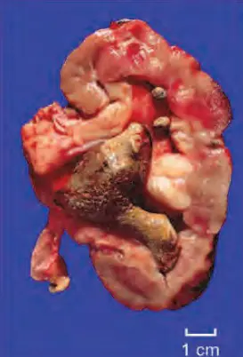
Current asset 1: /api/images_crop/nbme29_q0064_ocr.webp · 9898 bytesOCR source 1: https://pplines-online.bj.bcebos.com/deploy/official/paddleocr/pp-ocr-vl-16-online//41259b03-3c93-40aa-993c-369eee3b28b7/markdown_4/imgs/img_in_image_box_1285_95_1558_497.jpg?authorization=bce-auth-v1%2FALTAKDN8mY5KlNI7zaRpLmOqrw%2F2026-06-18T05%3A39%3A55Z%2F-1%2F%2Fd4790a59c44136c964314a055a1339cc964356fdb46fce6c9fdbe480672bf110
Correct: 3
Q82 · Block 5 Item 2 · form30_page-15
Cardiovascular / Cardiovascular / medium · options=5 · images=1
legacy-image
The graph shows diastolic and end-systolic relationships of the left ventricle. The solid line shows the control pressure-volume loop in a single cardiac cycle. If a healthy person is given nitroprusside and reflex responses are blocked, which of the following labeled end-systolic pressure points is most likely?
A A
B B
C C
D D
E E
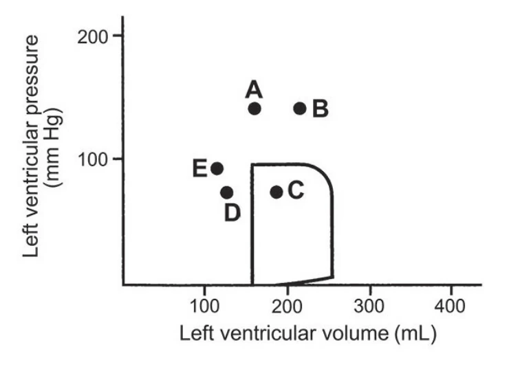
Current asset 1: /api/images_crop/form30_page-15.webp · 16818 bytes
A 10-year-old boy is evaluated because of malaise and dark brown urine for the past 2 days. Laboratory studies show: Hemoglobin 7.2 g/dL, Hematocrit 21.6%, Leukocyte count 8400/mm³, Reticulocyte count 6%, Platelet count 90,000/mm³, Prothrombin time 12 sec (INR=1.0), Partial thromboplastin time (activated) 28 sec, Serum Creatinine 7.4 mg/dL, Fibrinogen 380 mg/dL (N=200–400 mg/dL), Fibrin split products <10 (N=<10), Urea nitrogen (BUN) 82 mg/dL. A peripheral blood smear is shown. Which of the following is the most likely diagnosis?
A Acute lymphoblastic leukemia
B Acute poststreptococcal glomerulonephropathy
C Chronic myelogenous leukemia
D Hemolytic uremic syndrome
E Minimal change disease
F Sickle cell disease
Current asset 1: /api/images_crop/nbme27_page-159_ocr.webp · 14494 bytesOCR source 1: https://pplines-online.bj.bcebos.com/deploy/official/paddleocr/pp-ocr-vl-16-online//a8d3d99a-8737-49ca-89ff-99042b517050/markdown_0/imgs/img_in_image_box_1821_160_2341_929.jpg?authorization=bce-auth-v1%2FALTAKDN8mY5KlNI7zaRpLmOqrw%2F2026-06-18T05%3A40%3A37Z%2F-1%2F%2F4144b09b9681089b9251799c8913278235574e927de73111f00aaf1e6aa398bc
Correct: 4
Q84 · Block 5 Item 4 · nbme29_q0072
Behavioral/Nervous & Special Senses / Behavioral/Nervous & Special Senses / hard · options=5 · images=1
ocr-updated
During a clinical study, an investigator examines the effects of monoamine oxidase inhibitors to treat certain types of major depressive and phobic anxiety disorders. The concentration of which of the following compounds is most likely to be increased as a result of this treatment?
A A) $ \gamma $-Aminobutyric acid (GABA)
B B) Dihydroxyphenylalanine
C C) Epinephrine
D D) Tryptophan
E E) Tyrosine
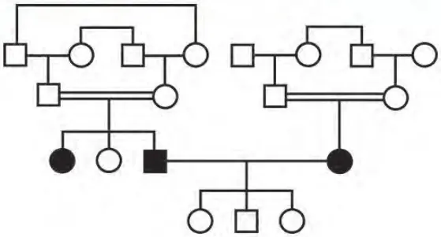
Current asset 1: /api/images_crop/nbme29_q0072_ocr.webp · 6150 bytesOCR source 1: https://pplines-online.bj.bcebos.com/deploy/official/paddleocr/pp-ocr-vl-16-online//06534c97-a02b-4352-9eeb-98b2656df950/markdown_3/imgs/img_in_image_box_519_90_1078_391.jpg?authorization=bce-auth-v1%2FALTAKDN8mY5KlNI7zaRpLmOqrw%2F2026-06-18T05%3A40%3A50Z%2F-1%2F%2F55afcd8186af9eaa8ac35962c1bbe6f65439878818c539eabd8b5a39dda43f09
Correct: 3
Q85 · Block 5 Item 5 · form30_page-110
GI / GI / medium · options=5 · images=0
text-only
A 23-year-old woman comes to the physician because of a 3-week history of frequent thirst and urination; she also has had a 3-kg (6.6-lb) weight loss during this period. Physical examination shows dehydration and tachypnea. Serum studies show a glucose concentration of 330 mg/dL, 2+ ketones, and pH of 7.2. Following the administration of intravenous fluids and insulin, there is marked improvement. The activity of which of the following enzymes has most likely increased in this patient's hepatocytes because of this treatment?
A Glucokinase
B Glucose 6-phosphatase
C Glycogen phosphorylase
D Phosphoenolpyruvate carboxykinase
E Phosphorylase kinase
Correct: 1
Q86 · Block 5 Item 6 · form31_page-107
Respiratory / Respiratory / medium · options=5 · images=1
legacy-image
A 40-year-old woman with primary pulmonary hypertension comes to the physician for a follow-up examination. Her blood pressure is 190/100 mm Hg. Echocardiography shows a peak pulmonary systolic pressure of 65 mm Hg. Treatment with bosentan is started. This therapy is most likely to result in blockade of the action of which of the following peptides in this patient?
A Calcitonin gene-related peptide
B Endothelin
C Neuropeptide Y
D Substance P
E Urotensin II
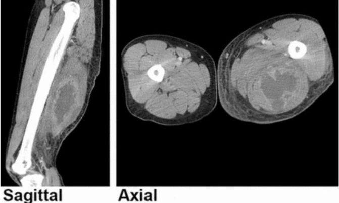
Current asset 1: /api/images_crop/form31_page-107.webp · 29004 bytes
Correct: 2
Q87 · Block 5 Item 7 · form31_page-108
Respiratory / Respiratory / medium · options=5 · images=0
text-only
A previously healthy 59-year-old man comes to the emergency department because of a 1-day history of fever, shortness of breath, and productive cough. He appears to be in moderate distress. His temperature is 38.4°C (101.1°F), and respirations are 26/min. Pulse oximetry on room air shows an oxygen saturation of 88%. Bronchial breath sounds are heard over the right lung base posteriorly with egophony and increased tactile fremitus. A chest x-ray shows right lower lobe pneumonia. Which of the following mechanisms is the most likely cause of the hypoxia in this patient?
A Alveolar fibrosis
B Hypoventilation
C Right-to-left cardiac shunt
D Right ventricular failure
E Ventilation-perfusion mismatch
Correct: 5
Q88 · Block 5 Item 8 · form31_page-127
Reproductive/Endocrine / Reproductive/Endocrine / medium · options=5 · images=1
ocr-updated
A 29-year-old man comes to the physician with his 27-year-old wife because they have been unable to conceive for 1 year. Previous examination of the wife showed no abnormalities. Physical examination shows normal genitalia. His serum testosterone and luteinizing hormone concentrations are within the reference ranges and serum follicle-stimulating hormone concentration is increased. Semen analysis shows decreased sperm count. A decreased serum concentration of which of the following is the most likely in this patient?
A Androstenedione
B Dihydrotestosterone
C Estradiol
D Inhibin B
E Sex hormone-binding globulin
Current asset 1: /api/images_crop/form31_page-127_ocr.webp · 6678 bytesOCR source 1: https://pplines-online.bj.bcebos.com/deploy/official/paddleocr/pp-ocr-vl-16-online//a543e8f3-5b77-41a1-8031-8c8b66cddf68/markdown_1/imgs/img_in_image_box_3_48_588_510.jpg?authorization=bce-auth-v1%2FALTAKDN8mY5KlNI7zaRpLmOqrw%2F2026-06-18T05%3A40%3A09Z%2F-1%2F%2F28e15b7930d5a9e211ac018b0df78953397381005b939b0f716b50c0df986f02
Correct: 4
Q89 · Block 5 Item 9 · form31_page-17
MSK/Skin / MSK/Skin / medium · options=9 · images=1
ocr-updated
A 16-year-old boy who plays high school football comes to the physician because of a painful, pruritic rash on his groin and upper thigh. Physical examination shows a rash with red, scaling margins. Direct microscopic examination of a KOH preparation of a skin scraping shows fungal hyphae and arthrospores. Which of the following is the most likely causal agent?
A Actinomyces israelii
B Blastomyces dermatitidis
C Candida albicans
D Coccidioides immitis
E Histoplasma capsulatum
F Paracoccidioides brasiliensis
G Penicillium marneffei
H Pneumocystis jiroveci (formerly P. carinii)
I Trichophyton rubrum
Current asset 1: /api/images_crop/form31_page-17_ocr.webp · 15466 bytesOCR source 1: https://pplines-online.bj.bcebos.com/deploy/official/paddleocr/pp-ocr-vl-16-online//5327ee9c-f785-46a1-81f2-c95e7e5d81a9/markdown_1/imgs/img_in_image_box_34_16_528_361.jpg?authorization=bce-auth-v1%2FALTAKDN8mY5KlNI7zaRpLmOqrw%2F2026-06-18T05%3A40%3A03Z%2F-1%2F%2Fbb17e7c472b1a8bd8690ddef53955ce6dfb079d6227bc17486349e3406891e7e
Correct: 9
Q90 · Block 5 Item 10 · nbme27_page-11
Hemat/Lymph/Immune / Hemat/Lymph/Immune / medium · options=5 · images=0
text-only
A 73-year-old woman has a 3-month history of increasing fatigue, weakness, and a 9.0-kg (20-lb) weight loss. Examination shows hepatosplenomegaly. An M-protein spike is observed on serum electrophoresis. Which of the following is the most likely diagnosis?
A Acute myelogenous leukemia
B B-lymphocyte neoplasia
C Chronic myelogenous leukemia
D Leukemoid reaction
E T-lymphocyte neoplasia
Correct: 2
Q91 · Block 5 Item 11 · nbme27_page-135
Behavioral/Nervous & Special Senses / Behavioral/Nervous & Special Senses / medium · options=5 · images=1
legacy-image
A 35-year-old woman with HIV infection has a first generalized tonic-clonic seizure. An MRI shows a small, solitary, enhancing lesion in the right frontal lobe. If stereotactic biopsy of this lesion were performed, it would show intense infiltration of lymphocytes, plasma cells, and macrophages and numerous 3 x 7-µm crescent-shaped organisms with central nuclei. The lesion regresses slowly after treatment with sulfonamide and pyrimethamine. Which of the following is the most likely mode of transmission of this infection?
A Blood transfusion
B Ingestion
C Migration across the cribriform plate
D Sexual intercourse
E Small-droplet inhalation
Current asset 1: /api/images_crop/nbme27_page-135.webp · 13578 bytes
Correct: 2
Q92 · Block 5 Item 12 · nbme27_page-172
Multisystem / Multisystem / medium · options=5 · images=0
text-only
A 20-year-old man comes to the physician because of a 2-month history of recurrent headaches. Funduscopic examination shows papilledema and a small retinal lesion consistent with a retinal hemangioblastoma. An MRI of the brain shows a lesion in the cerebellar midline. A CT scan of the abdomen shows cystic lesions in the pancreas. Which of the following is the most likely diagnosis?
A Neurofibromatosis 1
B Neurofibromatosis 2
C Sturge-Weber syndrome
D Tuberous sclerosis
E von Hippel-Lindau disease
Correct: 5
Q93 · Block 5 Item 13 · nbme28_q0020
Respiratory / Respiratory / medium · options=5 · images=0
text-only
Failure of normal differentiation of the endoderm in the embryonic lung bud is most likely to affect the development of which of the following? A) Capillary patterns B) Cartilage in bronchi C) Smooth muscle on the bronchi D) Surfactant secretion E) Tracheal rings
A A) Capillary patterns
B B) Cartilage in bronchi
C C) Smooth muscle on the bronchi
D D) Surfactant secretion
E E) Tracheal rings
Correct: 1
Q94 · Block 5 Item 14 · nbme28_q0022
Multisystem / Multisystem / medium · options=5 · images=0
text-only
A 5-year-old boy is brought to the emergency department after ingesting 10 oz of a household cleaning solvent. He is treated for acute hepatic and renal failure for 1 week and then discharged. During the next month, regeneration of this boy's mature hepatocytes and renal tubular epithelial cells will be accomplished mostly by which of the following mechanisms? A) Activation of stem cells to enter $ G_{1} $ phase of the cell cycle B) Decreased apoptosis at $ G_{1} $-M transition of the cell cycle C) Recruitment of cells from $ G_{0} $ into the cell cycle D) Shortened time for progression of cells through the cell cycle E) Terminal differentiation by cells exiting from the cell cycle
A A) Activation of stem cells to enter $ G_{1} $ phase of the cell cycle
B B) Decreased apoptosis at $ G_{1} $-M transition of the cell cycle
C C) Recruitment of cells from $ G_{0} $ into the cell cycle
D D) Shortened time for progression of cells through the cell cycle
E E) Terminal differentiation by cells exiting from the cell cycle
Correct: 2
Q95 · Block 5 Item 15 · nbme28_q0057
GI / GI / medium · options=6 · images=0
text-only
A 46-year-old woman comes to the physician because of temperatures of 38 to $ 39^{\circ} $C (100.4 to $ 102.2^{\circ} $F) and malaise for the past 2 days. She has chronic alcohol dependence. There are several spider angiomas on the face, chest, and back; she is not jaundiced. The abdomen is protuberant and nontender. There is shifting dullness to percussion. A firm liver edge is ballotable 3 cm below the right costal margin. Routine laboratory studies show mild anemia, mildly increased hepatic transaminase activities, and a decreased serum albumin concentration. Peritoneal aspiration yields serous fluid with 1100 leukocytes/mm $ ^{3} $ (80% neutrophils) and 100 erythrocytes/mm $ ^{3} $. Which of the following processes best accounts for the patient's febrile illness? A) Acute cholecystitis B) Chronic pancreatitis C) Exacerbation of autoimmune hepatitis D) Pelvic inflammatory disease E) Spontaneous bacterial peritonitis
A F) and malaise for the past 2 days. She has chronic alcohol dependence. There are several spider angiomas on the face, chest, and back; she is not jaundiced. The abdomen is protuberant and nontender. There is shifting dullness to percussion. A firm liver edge is ballotable 3 cm below the right costal margin. Routine laboratory studies show mild anemia, mildly increased hepatic transaminase activities, and a decreased serum albumin concentration. Peritoneal aspiration yields serous fluid with 1100 leukocytes/mm $ ^{3} $ (80% neutrophils) and 100 erythrocytes/mm $ ^{3} $. Which of the following processes best accounts for the patient's febrile illness?
B A) Acute cholecystitis
C B) Chronic pancreatitis
D C) Exacerbation of autoimmune hepatitis
E D) Pelvic inflammatory disease
F E) Spontaneous bacterial peritonitis
Correct: 1
Q96 · Block 5 Item 16 · nbme28_q0131
Behavioral/Nervous & Special Senses / Behavioral/Nervous & Special Senses / medium · options=5 · images=0
text-only
A 28-year-old woman who works as a glassblower has recently sustained burns on her hands but feels little pain. Neurologic examination shows decreased pain sensation in both upper extremities and weakness and atrophy of the intrinsic muscles of both hands. Which of the following best explains these findings? A) Cystic lesion involving midline structures and both ventral horns in the cervical enlargement B) Demyelination of the left corticospinal tract at all levels of the cord C) Lesion of the left anterolateral quadrant at C-2 D) Loss of myelin in the dorsal column white matter E) Loss of myelin in the lateral column white matter and loss of ventral horn motoneurons
A A) Cystic lesion involving midline structures and both ventral horns in the cervical enlargement
B B) Demyelination of the left corticospinal tract at all levels of the cord
C C) Lesion of the left anterolateral quadrant at C-2
D D) Loss of myelin in the dorsal column white matter
E E) Loss of myelin in the lateral column white matter and loss of ventral horn motoneurons
Correct: 5
Q97 · Block 5 Item 17 · nbme29_q0028
GI / GI / medium · options=5 · images=0
text-only
A 3-month-old boy is brought to the physician because of frequent loose stools during the past month. His maternal cousin has similar symptoms. He is exclusively breast-fed. He is below the 3rd percentile for length and weight. Physical examination shows mild dehydration. Laboratory studies show acidic stools that are positive for reducing substances. Following the oral administration of glucose, there is no increase in his serum glucose concentration. Following the oral administration of fructose, his stools become normal. A deficiency in which of the following in intestinal mucosal cells is most likely in this patient?
A A) Glucose transporter-4 (GLUT-4)
B B) GLUT-5
C C) Lactase
D D) Sodium-glucose cotransporter-1 (SGLT-1)
E E) Sucrase-isomaltase
Correct: 4
Q98 · Block 5 Item 18 · nbme29_q0095
Multisystem / Multisystem / medium · options=6 · images=0
text-only
A 28-year-old African American man comes to the physician because of a 3-month history of mild fatigue and weakness; he has had a 4.5-kg (10-lb) weight loss during this period. He also has a 6-month history of dry cough associated with chest pain and shortness of breath. The patient is married with two children, ages 2 and 3 years. He says that no one else at home has similar symptoms. He is a carpenter. He has several pets, including a dog, two cats, and a bird. He spent a week in Mexico approximately 1 year ago. He has smoked one-half pack of cigarettes daily for 10 years. He is 178 cm (5 ft 10 in) tall and weighs 70 kg (154 lb); BMI is 22 kg/m². Mild wheezes are heard. Physical examination shows no other abnormalities. A chest x-ray shows bilateral hilar adenopathy and right paratracheal node enlargement. Biopsy specimens obtained via fiberoptic bronchoscopy show noncaseating granulomas. Test results of the biopsy specimen for acid-fast bacilli and fungi are negative. Which of the following is the strongest predisposing risk factor for this patient's condition?
A 43-year-old man comes to the physician because of a 1-month history of chronic sinus congestion, occasional bleeding from the nose, and intermittent shortness of breath with exertion. He has had no fever or chills but has felt very "run down." His temperature is 37.4°C (99.3°F), pulse is 88/min, respirations are 16/min, and blood pressure is 160/100 mm Hg. Physical examination shows bilateral maxillary and frontal sinus tenderness to palpation and poor transillumination. Isolated crackles are heard in the left mid lung. Cardiac examination shows no abnormalities. Laboratory studies show: Hemoglobin 9.8 g/dL, Hematocrit 28%, Serum Na+ 132 mEq/L, K+ 5 mEq/L, Cl- 100 mEq/L, HCO3- 21 mEq/L, Urea nitrogen 48 mg/dL, Creatinine 2.4 mg/dL, Antinuclear antibody negative, Cytoplasmic antineutrophil cytoplasmic antibody (c-ANCA) positive, Anti-glomerular basement membrane antibody negative, Urine pH 6.4, Specific gravity 1.015, Blood 3+, Protein 1+. A chest x-ray shows an infiltrate in the lower segment of the left upper lobe of the lung with normal cardiac silhouette and no significant mediastinal adenopathy. A CT scan of the sinuses shows opacities bilaterally. Which of the following patterns of inflammatory vascular injury most likely underlies the pathophysiology of this patient's disease?
A Eosinophilic vasculitis
B Leukocytoclastic vasculitis
C Lymphomatoid granulomatosis
D Necrotizing granulomatous vasculitis
E Temporal arteritis
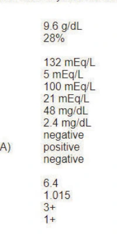
Current asset 1: /api/images_crop/form30_page-60.webp · 12098 bytes
A 3-month-old boy is brought to the physician because of yellow eyes and skin and weakness since birth. Physical examination shows jaundice, large fontanels, a flat midfacial area, hypotonia, and hepatomegaly. Serum studies show: Total bilirubin (mainly direct) increased, AST increased, ALT increased, Very-long-chain fatty acids increased. A liver biopsy specimen shows foamy, lipid-filled hepatocytes, necrosis, and absence of a specific organelle. This organelle is most likely which of the following?
A Golgi complex
B Lysosomes
C Mitochondria
D Peroxisomes
E Smooth endoplasmic reticulum
Current asset 1: /api/images_crop/form30_page-93.webp · 7850 bytes
Correct: 4
Q101 · Block 6 Item 1 · form30_page-188
Renal/Urinary / Renal/Urinary / medium · options=5 · images=1
ocr-updated
A 60-year-old man comes to the physician for a routine health maintenance examination. Physical examination shows no abnormalities. Urinalysis shows: pH 6.0, Specific gravity 1.018, Blood 3+, Glucose negative, Protein 1+. Microscopic examination of the urine shows atypical cells. A CT scan of the abdomen discloses a lesion of the right kidney as shown in the photograph. Which of the following compounds is the most significant predisposing risk factor for this patient's condition?
A Arsenic
B Beryllium
C 2-Naphthylamine
D Nickel
E Vinyl chloride
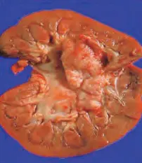
Current asset 1: /api/images_crop/form30_page-188_ocr.webp · 6178 bytesOCR source 1: https://pplines-online.bj.bcebos.com/deploy/official/paddleocr/pp-ocr-vl-16-online//4561176f-0493-46ad-b4cd-94d421c7f25a/markdown_4/imgs/img_in_image_box_1363_71_1565_304.jpg?authorization=bce-auth-v1%2FALTAKDN8mY5KlNI7zaRpLmOqrw%2F2026-06-18T05%3A40%3A05Z%2F-1%2F%2F84e9ee24f2fdfae73e9ae16397195b6f281faa1bc3ae8b9183a2e514008dcec5
Correct: 3
Q102 · Block 6 Item 2 · nbme29_q0092
Cardiovascular / Cardiovascular / medium · options=5 · images=1
legacy-image
An 18-year-old man is brought to the emergency department 30 minutes after a motorcycle collision. He has lost a significant amount of blood. His pulse is 120/min, and blood pressure is 90/70 mm Hg. Physical examination shows a severe laceration of the left calf. Rapid infusion of 0.9% saline is started to restore his vascular volume deficit. The solid curves in the graph show the relationship between right atrial pressure and cardiac output (cardiac function curve). The dashed lines show the relationship between cardiac output and right atrial pressure (vascular function curve). Point X is the preinfusion equilibrium point. Which of the following is the most likely new cardiac and vascular equilibrium point following the infusion?
A A) [See image]
B B) [See image]
C C) [See image]
D D) [See image]
E E) [See image]
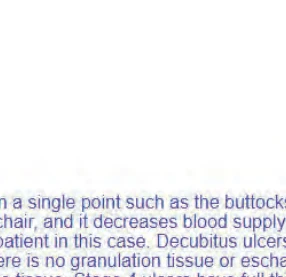
Current asset 1: /api/images_crop/nbme29_q0092_img01.webp · 12384 bytes
A 35-year-old woman comes to the physician because of fever and left flank pain for 2 days. She has had several similar episodes during the past 4 years, all of which resolved with antibiotic therapy. Her temperature is 38.6°C (101.5°F). Physical examination shows exquisite left costovertebral angle tenderness. Urinalysis shows small numbers of WBCs and WBC casts, and numerous triple phosphate crystals. A course of antibiotic therapy does not resolve the pain and the patient undergoes resection of the left kidney. A photograph of the patient's resected kidney is shown. Which of the following was the most likely causal organism in this patient's disease process?
A Enterobacter cloacae
B Enterococcus faecalis
C Escherichia coli
D Klebsiella pneumoniae
E Proteus mirabilis
F Pseudomonas aeruginosa
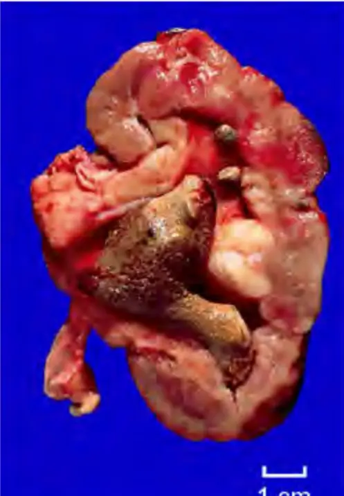
Current asset 1: /api/images_crop/nbme27_page-58_ocr.webp · 19482 bytesOCR source 1: https://pplines-online.bj.bcebos.com/deploy/official/paddleocr/pp-ocr-vl-16-online//2310fca4-b141-4c8e-a935-8addb958ad87/markdown_4/imgs/img_in_image_box_2334_170_2831_886.jpg?authorization=bce-auth-v1%2FALTAKDN8mY5KlNI7zaRpLmOqrw%2F2026-06-18T05%3A39%3A44Z%2F-1%2F%2Ffa5af27d0c759b0e21677d26c93b9f4d7155c050870af06c76d715fbd59a791c
Correct: 5
Q104 · Block 6 Item 4 · form30_page-0
Multisystem / Multisystem / hard · options=6 · images=0
text-only
Shortly after delivery, a full-term male newborn is found to have black hair with a white forelock. His mother, a brunette, also has a white forelock and wears hearing aids. Physical examination shows heterochromia of irides. Otoacoustic emissions testing and brain stem auditory evoked responses show bilateral sensorineural hearing loss. Which of the following is the most likely cause of the findings in this patient?
A Abnormal neural crest development
B Abnormality of connexins
C Deficiency of homogentisic acid oxidase activity
D Deficiency of tyrosinase activity
E Failure of internalization of melanin granules by keratinocytes
F Failure of melanosome transportation along dendrites
Correct: 1
Q105 · Block 6 Item 5 · form31_page-56
Reproductive/Endocrine / Reproductive/Endocrine / hard · options=5 · images=0
text-only
A 31-year-old nulligravid woman comes to the physician because she and her husband have not been able to conceive for the past 3 years. Her husband has been evaluated and no problems were found. She has an intact hypothalamic-pituitary-ovarian axis, and her serum estrogen concentration is within the reference range. Clomiphene therapy is started. Which of the following effects is most likely to occur in this patient?
A Decreased contractile activity of the uterine myometrium
B Decreased inhibitory estrogen feedback on the pituitary gland
C Facilitation of blastocyst implantation
D Increased pulsatile release of prolactin
E Increased survival of the corpus luteum
Correct: 2
Q106 · Block 6 Item 6 · nbme27_page-138
Behavioral/Nervous & Special Senses / Behavioral/Nervous & Special Senses / hard · options=9 · images=0
text-only
A 23-year-old woman is brought to the emergency department by her roommate because she was found unresponsive on the living room floor. Examination shows constricted pupils and stupor. Which of the following substances is most likely responsible for these effects?
A Amphetamine
B Androstenedione
C Caffeine
D Cocaine
E Heroin
F LSD
G Marijuana
H Nicotine
I Phencyclidine (PCP)
Correct: 5
Q107 · Block 6 Item 7 · nbme28_q0063
Behavioral/Nervous & Special Senses / Behavioral/Nervous & Special Senses / hard · options=6 · images=0
text-only
A previously healthy 10-year-old girl is brought to the physician by her mother because of a 6-week history of headache, nausea, and difficulty walking. An MRI of the brain shows a mass in the posterior fossa that is found to be an astrocytoma. This tumor developed from cells that normally serve which of the following functions in the brain? A) Formation of myelin sheaths in the central nervous system B) Phagocytosis of recycled synaptic terminal membrane C) Production and secretion of cerebrospinal fluid D) Termination of action potentials E) Transport of hormones from the cerebral spinal fluid to capillaries F) Uptake of amino acid neurotransmitters
A A) Formation of myelin sheaths in the central nervous system
B B) Phagocytosis of recycled synaptic terminal membrane
C C) Production and secretion of cerebrospinal fluid
D D) Termination of action potentials
E E) Transport of hormones from the cerebral spinal fluid to capillaries
F F) Uptake of amino acid neurotransmitters
Correct: 1
Q108 · Block 6 Item 8 · nbme29_q0074
Behavioral/Nervous & Special Senses / Behavioral/Nervous & Special Senses / hard · options=5 · images=0
text-only
A 68-year-old woman with hypertension comes to the physician because of concerns about recent home blood pressure measurements. She says that her systolic blood pressures have ranged from 140 mm Hg to 160 mm Hg during the past 10 days. She has generalized anxiety disorder and major depressive disorder. Medications include amlodipine, citalopram, and hydrochlorothiazide. She appears anxious. Her blood pressure is 145/94 mm Hg. Physical examination shows no other abnormalities. While discussing treatment options, the patient says, "You are not taking good care of me; you must not like me very much." Which of the following is the most appropriate initial response by the physician?
A A) "Blood pressure often goes up as you get older, so needing additional medication is common."
B B) "A common reason for poorly controlled blood pressure is not taking medications properly. Can you tell me how you take your medicines?"
C C) "I am taking the best possible care of you; we just need to make some medication adjustments."
D D) "I want to help you as much as I can. Why don't we talk about what is going on in your life."
E E) "Your anxiety seems worse today. Let's talk about some treatment options."
Correct: 4
Q109 · Block 6 Item 9 · form30_page-131
MSK/Skin / MSK/Skin / medium · options=5 · images=0
text-only
A 30-year-old man comes to the physician because of a 2-month history of constant numbness of his right hand. He says he has had intermittent numbness of his right hand for the past 2 years. He says that sometimes the numbness awakens him from sleep. He is a right-handed carpenter. Occasionally at work he needs to rest for a few minutes when the numbness increases. Neurologic examination shows mild atrophy of the right thenar eminence. There is mild weakness of the right abductor pollicis brevis muscle. Sensation to touch is most likely to be decreased or abnormal in which of the following areas?
A Dorsal surface of the lateral hand
B Lateral hand and forearm
C Medial hand
D Medial hand and forearm
E Palmar surface of the lateral hand
Correct: 5
Q110 · Block 6 Item 10 · form30_page-168
Reproductive/Endocrine / Reproductive/Endocrine / medium · options=5 · images=0
text-only
A 24-year-old man comes to the physician because his wife has been unable to conceive for the past 2 years. Previous evaluation of his wife showed no abnormalities. He has no history of major medical illness. He does not smoke cigarettes. Physical examination shows a left testicle that is smaller than the right and an enlarged left spermatic cord that increases in size with Valsalva maneuver. Laboratory studies show oligospermia. Which of the following is the most likely diagnosis?
A Cryptorchidism
B Epididymitis
C Hypospadias
D Testicular torsion
E Varicocele
Correct: 5
Q111 · Block 6 Item 11 · form31_page-171
Cardiovascular / Cardiovascular / medium · options=5 · images=1
legacy-image
An 18-year-old woman comes to the physician because of a 3-week history of intermittent double vision and transient vision loss. She also has had a 9-kg (20-lb) weight loss during the past 5 months due to decreased appetite. She is 152 cm (5 ft) tall and now weighs 51 kg (112 lb); BMI is 22 kg/m². Her temperature is 38°C (100.5°F), and blood pressure is 140/86 mm Hg. Funduscopic examination shows a recent retinal hemorrhage of the left eye. Cardiac examination shows bilateral carotid bruits. Radial pulses are diminished on the right side and absent on the left side. Laboratory studies show: Hemoglobin 10.5 g/dL, Hematocrit 32%, Mean corpuscular volume 95 μm³, Leukocyte count 13,250/mm³ with normal differential, Erythrocyte sedimentation rate 84 mm/h, Serum IgA 650 mg/dL, IgG 3100 mg/dL, IgM 852 mg/dL, Antinuclear antibodies weakly positive, Rheumatoid factor weakly positive. Histologic examination of a carotid artery in this patient will most likely show which of the following types of vasculitis?
A Acute neutrophilic
B Fibrinoid necrotizing
C Granulomatous
D Leukocytoclastic
E Lymphocytic
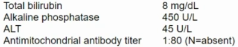
Current asset 1: /api/images_crop/form31_page-171.webp · 7524 bytes
Correct: 3
Q112 · Block 6 Item 12 · form31_page-25
MSK/Skin / MSK/Skin / medium · options=5 · images=1
legacy-image
A 14-year-old boy is brought to the physician because of a 2-week history of progressively severe pain in his right leg just below the knee. An x-ray of the involved area shows a large, partly calcified mass that erodes the medullary canal of the tibia, infiltrates the cortex, and extends into the adjacent soft tissue. A biopsy of the lesion identifies primitive cells in a lace-like meshwork of bone with numerous mitoses. Which of the following is another common site of origin for this pathologic process?
A Clavicle
B Femur
C Metacarpal bones
D Ribs
E Vertebrae
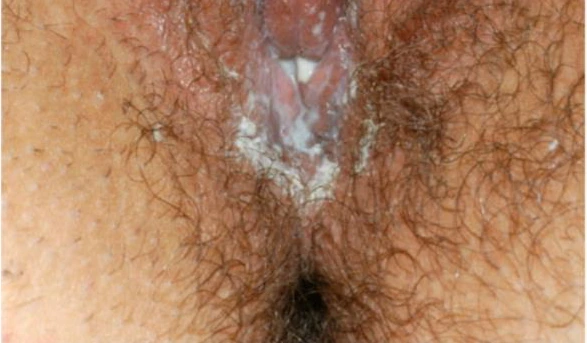
Current asset 1: /api/images_crop/form31_page-25.webp · 44958 bytes
Correct: 2
Q113 · Block 6 Item 13 · nbme27_page-178
MSK/Skin / MSK/Skin / medium · options=5 · images=0
text-only
A 9-year-old girl is brought to the emergency department by her father because of severe pain in her right shoulder after a fall 1 hour ago. Physical examination shows pain on movement of the right shoulder and a tender right clavicle. An x-ray of the shoulder shows a nondisplaced fracture of the right clavicle. Which of the following structures of the clavicle will most likely assist in producing new bone to heal this fracture?
A Epiphysis
B Haversian canal
C Lamella
D Periosteum
E Volkmann canal
Correct: 4
Q114 · Block 6 Item 14 · nbme27_page-18
Multisystem / Multisystem / medium · options=5 · images=0
text-only
A 19-year-old woman comes to the physician because of a 3-day history of fever, shortness of breath, cough productive of blood-tinged sputum, rash on her legs, and pain of her groin. She lives on a small farm in rural New Mexico and says that all three of her cats have been infested with fleas. She is in respiratory distress. Her temperature is 39°C (102.2°F), pulse is 104/min, respirations are 28/min, and blood pressure is 100/60 mm Hg. Physical examination shows a 1-cm ulcer on the right lower extremity and numerous erythematous macular lesions over both lower extremities. There is a fluctuant 3 x 5-cm mass in the femoral lymph node chain. A chest x-ray shows bilateral infiltrates. A Gram stain of purulent material aspirated from the femoral mass shows numerous neutrophils and few gram-negative bacilli. Which of the following is the most likely causal organism?
A Coxiella burnetii
B Ehrlichia chaffeensis
C Francisella tularensis
D Streptococcus pneumoniae
E Yersinia pestis
Correct: 5
Q115 · Block 6 Item 15 · nbme28_q0044
Hemat/Lymph/Immune / Hemat/Lymph/Immune / medium · options=5 · images=0
text-only
A 5-year-old girl is brought to the physician because of listlessness, fatigue, and dull pain in the right upper quadrant of the abdomen. Her height and weight are below the 25 th percentile. Laboratory findings indicate that the content of her $ \beta $-globin chain is 15% to 20% of normal. Sequencing of the $ \beta $-globin gene shows a point mutation in a sequence 3' to the coding region in which AATAAA is converted to AACAAA. Consequently, the amount of mRNA for $ \beta $-globin is decreased to 10% of normal. Which of the following functions in mRNA synthesis and processing is most likely encoded by the sequence AATAAA? A) Capping with GTP B) Cleavage and polyadenylation C) Silencing of the promoter D) Splicing of the initial mRNA transcript in the nucleus E) Transport of the mRNA out of the nucleus
A A) Capping with GTP
B B) Cleavage and polyadenylation
C C) Silencing of the promoter
D D) Splicing of the initial mRNA transcript in the nucleus
E E) Transport of the mRNA out of the nucleus
Correct: 2
Q116 · Block 6 Item 16 · nbme28_q0136
Respiratory / Respiratory / medium · options=6 · images=0
text-only
A 68-year-old woman has had progressive shortness of breath with exertion since she started treatment with eyedrops for glaucoma 2 weeks ago. Pulmonary function tests show a decreased forcedexpiratory volume in 1 sec (FEV $ _{1} $). The lungs are clear to auscultation. The eyedrops are most likely from which of the following classes of drugs? A) $ \alpha $-Adrenergic agonist B) $ \beta $-Adrenergic agonist C) $ \beta $-Adrenergic blocker D) Carbonic anhydrase inhibitor E) Cholinesterase inhibitor F) Prostaglandin analog
A A) $ \alpha $-Adrenergic agonist
B B) $ \beta $-Adrenergic agonist
C C) $ \beta $-Adrenergic blocker
D D) Carbonic anhydrase inhibitor
E E) Cholinesterase inhibitor
F F) Prostaglandin analog
Correct: 6
Q117 · Block 6 Item 17 · nbme29_q0030
GI / GI / medium · options=5 · images=0
text-only
An overweight 50-year-old man comes to the physician because of a 3-day history of intermittent severe abdominal and interscapular pain associated with nausea and vomiting. He has had an 18-kg (40-lb) weight loss during the past 6 months by caloric restriction and exercise. He has not used appetite suppressants. He is in mild distress. Abdominal examination shows tenderness of the right upper quadrant. Laboratory studies show: Test of the stool for occult blood is negative. Which of the following is the most likely diagnosis?
A 64-year-old woman with chronic obstructive pulmonary disease comes to the emergency department because of a fainting spell 1 hour ago. She says she felt light-headed and weak for approximately 20 seconds after an episode of severe coughing. She thinks she may have lost consciousness. She has had nasal congestion and throat irritation for the past 3 days. She is not taking any medications. Which of the following mechanisms is most likely responsible for the syncope?
A Cerebral embolus originating from intracardiac thrombus
B Decreased cardiac output caused by increased intrathoracic pressure
C Decreased cerebral perfusion caused by atrial arrhythmia
D Generalized tonic-clonic seizure triggered by increased cerebral irritability
A 14-year-old girl is brought to the physician because of a 1-month history of migraine-like headaches, vomiting, and multiple left-sided focal seizures. She has had hearing loss since the age of 11 years. Her mother and maternal grandmother have high-tone deafness. Physical examination shows loss of vision in one half of the visual field of the right eye and weakness of the right upper and lower extremities. Serum and cerebrospinal fluid concentrations of lactic acid are increased. This patient most likely has a mutation of which of the following? A) Endoplasmic reticulum glycosyltransferase B) Lysosomal $ \alpha $-glucosidase C) Mitochondrial tRNA $ ^{Leu} $ D) Nuclear proteasome activator E) Peroxisomal catalase
A 58-year-old woman with type 2 diabetes mellitus is brought to the emergency department because of an 18-hour history of fever, confusion, and pain of her left leg. Her temperature is $ 39.6^{\circ} $C ( $ 103.3^{\circ} $F), pulse is 124/min, respirations are 22/min, and blood pressure is 94/60 mm Hg. Physical examination shows a diffuse, erythematous rash and conjunctival injection. Erythema and edema extend from the dorsum of the left foot to the knee. She is oriented to person but not to place or time. Neurologic examination shows no other abnormalities. Serum studies show: Urea nitrogen 36 mg/dL Creatinine 2.8 mg/dL Total bilirubin 2.2 mg/dL AST 470 U/L ALT 385 U/L One day later, blood cultures grow gram-positive cocci in chains. These bacteria most likely produced a toxin that caused this patient's condition via which of the following mechanisms?
A A) Binding to the T-lymphocyte receptor and class II MHC molecules
B B) Blockade of protein synthesis by depurination of ribosomal RNA
C C) Catalyzing of the formation of cAMP from ATP
D D) Cleavage of kinases that activate mitogen-activated protein kinase to induce macrophage apoptosis
E E) Disruption of cytoskeleton architecture by glycosylating Rho1
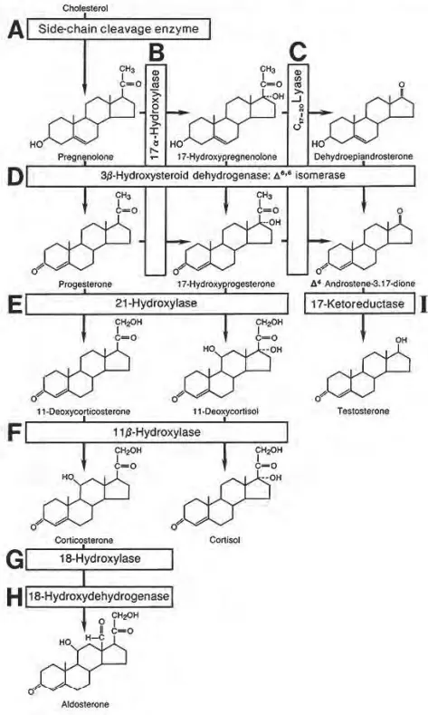
Current asset 1: /api/images_crop/nbme29_q0128_ocr.webp · 32240 bytesOCR source 1: https://pplines-online.bj.bcebos.com/deploy/official/paddleocr/pp-ocr-vl-16-online//55774324-02a3-4260-ad8b-f44f8cb8dda0/markdown_4/imgs/img_in_image_box_391_127_864_916.jpg?authorization=bce-auth-v1%2FALTAKDN8mY5KlNI7zaRpLmOqrw%2F2026-06-18T05%3A40%3A31Z%2F-1%2F%2F58fca63b717956241e18336e047b0b0ca63a9bf39e3a369a569d763023d9f1e4